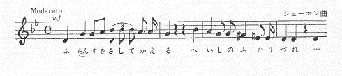
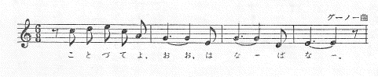

| かもめ ------喜劇 四幕------ | |
| アントン チェーホフ | |
| (2012) | |
かもめ
――喜劇 四幕――
アントン・チェーホフ
神西清訳
人物
アルカージナ（イリーナ・ニコラーエヴナ） とつぎ先の姓はトレープレヴァ、女優
トレープレフ（コンスタンチン・ガヴリーロヴィチ） その息子、青年
ソーリン（ピョートル・ニコラーエヴィチ） アルカージナの兄
ニーナ（ミハイロヴナ・ザレーチナヤ） 若い処女、裕福な地主の娘
シャムラーエフ（イリヤー・アファナーシエヴィチ） 退職中尉
、ソーリン家の支配人
ポリーナ（アンドレーエヴナ） その妻
マーシャ その娘
トリゴーリン（ボリース・アレクセーエヴィチ） 文士
ドールン（エヴゲーニイ・セルゲーエヴィチ） 医師
メドヴェージェンコ（セミョーン・セミョーノヴィチ） 教員
ヤーコフ 下男
料理人
小間使
ソーリン家の田舎屋敷でのこと。――三幕と四幕のあいだに二年間が経過
ソーリン家の領地内の廃園の一部。広い並木道が、観客席から庭の奥のほうへ走って、湖に通じているのだが、家庭劇のため急設された仮舞台にふさがれて、湖はまったく見えない。仮舞台の左右に灌木
の茂み。椅子
が数脚、小テーブルが一つ。
日がいま沈んだばかり。幕のおりている仮舞台の上には、ヤーコフほか下男たちがいて、咳
ばらいや槌
音が聞える。散歩がえりのマーシャとメドヴェージェンコ、左手から登場。
メドヴェージェンコ あなたは、いつ見ても黒い服ですね。どういうわけです？
マーシャ わが人生の喪服なの。あたし、不仕合せな女ですもの。
メドヴェージェンコ なぜです？ （考えこんで）わからんですなあ。......あなたは健康だし、お父さんにしたって金持じゃないまでも、暮しに不自由はないし。僕なんか、あなたに比べたら、ずっと生活は辛 いですよ。月に二十三ルーブリしか貰 ってないのに、そのなかから、退職積立金を天引きされるんですからね。それだって僕は、喪服なんか着ませんぜ。（ふたり腰をおろす）
マーシャ お金のことじゃないの。貧乏人だって、仕合せにはなれるわ。
メドヴェージェンコ そりゃ、理論ではね。だが実際となると、そうは行かない。僕に、おふくろ、妹がふたり、それに小さい弟――それで月給がただの二十三ルーブリ。まさか食わず飲まずでもいられない。お茶も砂糖もいりますね。タバコもいる。そこでキリキリ舞いになる。
マーシャ （仮舞台のほうを振向いて）もうじき幕があくのね。
メドヴェージェンコ そう。出演はニーナ嬢で、脚本はトレープレフ君の書きおろし。ふたりは恋仲なんだから、今日はふたりの魂が融合して、同じ一つの芸術的イメージを、ひたすら表現しようという寸法でさ。ところが僕とあなたの魂には、共通の接点がない。僕はあなたを想 っています。恋しさに家 にじっとしていられず、毎日一里半の道を、てくてくやって来ては、また一里半帰っていく。その反対給付といえば、あなたのそっけない顔つきだけです。それも無理はない。僕には財産もなし、家族は大ぜいときてますからね。食うや食わずの男と、誰が好きこのんで結婚なんかするものか？
マーシャ つまらないことを。（かぎタバコをかぐ）お気持はありがたいと思うけれど、それにお応 えできないの。それだけのことよ。（タバコ入れを差出して）いかが？
メドヴェージェンコ 欲しくないです。（間）
マーシャ 蒸し蒸しすること。晩 くなって、ごろごろザーッときそうね。あなたはしょっちゅう、理屈をこねるか、お金の話か、そのどっちかなのね。あなたに言わせると、貧乏ほど不仕合せなものはないみたいだけれど、あたしなんか、ボロを着て乞食 ぐらしをしたほうが、どんなに気楽だか知れやしないわ。......あなたには、わかってもらえそうもないけど......
右手から、ソーリンとトレープレフ登場。
ソーリン （ステッキにもたれながら）わたしはどうも、田舎 が苦手でな、この分じゃてっきり、一生この土地には馴染 めまいよ。ゆうべは十時に床へはいって、けさ九時に目がさめたが、あんまり寝すぎたもんで、脳みそが頭蓋骨 に、べったりくっついたような気がした――とまあいった次第でな（笑う）。ところが昼めしのあとで、ついまた寝こんじまって、今じゃ全身へとへと、夢にうなされてるみたいな気持さ、早い話がね......
トレープレフ そりゃもちろん、伯父さんは郡会に住む人ですよ。（マーシャとメドヴェージェンコを見て）皆さん、始まる時には呼びますよ。今ここにいられちゃ困るな。暫時 ご退場を願います。
ソーリン （マーシャに）ちょいとマーシャさん、あの犬の鎖を解いてやるように、ひとつパパにお願いしてみてはくださらんか。やけに吠 えるでなあ。おかげで妹は、夜っぴてまた寝られなかった。
マーシャ ご自分で父におっしゃってくださいまし、あたしはご免こうむります。あしからず。（メドヴェージェンコに）さ、行きましょう！
メドヴェージェンコ （トレープレフに）じゃ、始まる前に、知らせによこしてください。
ふたり退場。
ソーリン すると、夜どおしまた、吠えられるのか。さあ、事だぞ。わたしは田舎へ来て、思う通りの暮しのできた例 しがない。前にゃよく、二十八日の休暇を取っちゃ、ここへやって来たもんだ。骨休めや何やら――とまあいった次第でな。ところが、くだらんことに責め立てられて、着いたその日から、逃げ出したくなったよ（笑う）。引揚げる時にゃ、やれやれと思ったもんだ。......だが今じゃ、役を退 いてしまって、ほかに居場所がない――早い話がね。いやでも、ここに釘 づけだ......
ヤーコフ （トレープレフに）若旦那 、〔わっしら〕ちょいと一浴びしてきます。
トレープレフ いいとも。だが十分したら、みんな持ち場にいてくれよ。（時計を見て）もうじき始まりだからな。
ヤーコフ 承知しやした。（退場）
トレープレフ （仮舞台を見やりながら）さあ、これが僕の劇場だ。カーテン、袖 が一つ、袖がもう一つ――その先は、がらんどうだ。書割りなんか、一つもない。いきなりパッと、湖と地平線の眺めが開けるんだ。幕あきは、きっかり八時半。ちょうど月の出を目がけてやる。
ソーリン 結構だな。
トレープレフ 万一ニーナさんが遅刻しようもんなら、舞台効果は吹っ飛んじまう。もうくる時分だがなあ。あのひとは、お父さんやまま母の見張りがきびしいもんで、家 を抜け出すのは、牢 破りも同様、むずかしいんですよ。（伯父のネクタイを直してやる）伯父さんは、頭も髯 ももじゃもじゃだなあ。ひとつ、刈らせるんですね。......
ソーリン （髯をしごきながら）これで一生、たたられたよ。わたしは若い時分から、飲んだくれそっくりの風采 ――とまあいった次第でな。ついぞ女にもてた例 しがない。（腰かけながら）妹のやつ、なぜああ、おかんむりなんだろう？
トレープレフ なぜかって？ 淋 しいんですよ。（ならんで腰をおろしながら）妬 けるんでさ。おっ母 さんはてんからもう、この僕にも、今日の芝居にも、僕の脚本にも、反感を持ってるんだ。というのも、演 るのが自分じゃなくて、あのニーナさんだからなんです。僕の脚本も見ない先から、眼の敵 にしてるんだ。
ソーリン （笑う）まさか、そう気を回さんでも......
トレープレフ おっ母さんはね、この小っぽけな舞台で喝采 を浴びるのが、あのニーナさんで、自分じゃないのが、癪 のたねなんですよ。（時計を見て）ちょいと心理的な変り種でね――おっ母さんは。そりゃ才能もある、頭もいい、小説本を読みながら、めそめそ泣くのも得意だし、ネクラーソフの詩だって、即座に残らず暗誦 できるし、病人の世話をさせたら――エンジェルもはだしですよ。ところが、例しにあの人の前で、エレオノラ・ドゥーゼでも褒 めてごらんなさい。事ですぜ！ 褒めるなら、あのひとのことだけでなくてはならん。劇評も、あの人のことだけ書けばいい。『椿姫 』だの『人生の毒気』（訳注 ロシア十九世紀の傾向的作家マルケーヴィチの戯曲）だのをやる時のあの人の名演技を、わいわい騒ぎ立てたり、感激したりしなくてはならん。ところが、この田舎にゃ、そういう麻酔剤がない。そこで、淋しいもんだから苛々 する。われわれがみんな悪者で、親のカタキだということになる。おまけに、あの人は御幣 かつぎで、三本蠟燭 （訳注 死人のほとりを照らす習慣）をこわがる、十三日と聞くと顔いろを変える。しかも、けちんぼときている。オデッサの銀行に、七万も預けてあることは――僕ちゃんと知ってるんだ。だのに、ちょいと貸してとでも言おうもんなら、めそめそ泣きだす始末だ。
ソーリン お前さんは、自分の脚本がおっ母さんの気に入らんものと、頭から決めこんで、しきりにむしゃくしゃ――とまあいった次第だがな。案じることはないさ――おっ母さんは、君を崇拝しているよ。
トレープレフ （小さな花の弁をむしりながら）好き――嫌 い、好き――嫌い、好き――嫌い。（笑う）そうらね、おっ母さんは僕が嫌いだ。あたり前さ！ あの人は生きたい、恋がしたい、派手な着物が着たい。ところがこの僕が、もう二十五にもなるもんだから、おっ母さんは厭 でも、自分の年を思い出さざるを得ない。僕がいなけりゃ、あの人は三十二でいられるが、僕がいると、とたんに四十三になっちまう。だから僕が苦手なんですよ。それにあの人は、僕が劇場否定論者だということも知っている。あの人は劇場が大好きで、あっぱれ自分が、人類だの神聖な芸術だのに、奉仕しているつもりなんだ。ところが僕に言わせると、当世の劇場というやつは、型にはまった因襲にすぎない。こう幕があがると、晩がたの照明に照らされた三方壁の部屋のなかで、神聖な芸術の申し子みたいな名優たちが、人間の食ったり飲んだり、惚 れたり歩いたり、背広を着たりする有様を、演じてみせる。ところで見物は、そんな俗悪な場面やセリフから、なんとかしてモラルをつかみ出そうと血まなこだ。モラルと言っても、ちっぽけな、手っとり早い、ご家庭にあって調法――といった代物 ばかりさ。そいつが手を変え品を変えて、百ぺん千べん、いつ見ても種は一つことの繰返しだ。そいつを見ると僕は、モーパッサンみたいに、ワッと逃げ出すんです。エッフェル塔の俗悪さがやりきれなくなって、命からがら逃げ出したモーパッサン（訳注 その小説『さすらい』参照）みたいにね。
ソーリン 劇場がないじゃ、話になるまい。
トレープレフ だから、新しい形式が必要なんですよ。新形式がいるんで、もしそれがないんなら、いっそ何にもないほうがいい。（時計を見る）僕は、おっ母さんが好きです、とても好きです。だが、あの人の生活は、なんぼなんでも酷 すぎる。しょっちゅう、あの小説家のやつとべたべたしちゃ、のべつ新聞に浮名をながしている。これにゃまったく閉口ですよ。時によると、人間の悲しさで、僕だって人なみのエゴイズムが、むらむらっと起きることもある。つまり、うちのおっ母さんが有名な女優なのが、くやしくなるんです。もし普通の女でいてくれたら、僕もちっとは幸福だったろうにな、ってね。ね伯父さん、これほど情けない、ばかげた境遇があるもんでしょうか。おっ母さんの客間には、よく天下のお歴々がずらり顔をならべたもんです――役者とか、文士とかね。そのなかで僕一人だけが、名も何もない雑魚 なんだ。同席を許してもらえるのも、僕があの人の息子 だからというだけのことに過ぎん。僕は一体誰だ？ どこの何者だ？ 大学を三年で飛び出した。理由は、新聞や雑誌の社告によくある、例の「さる外部事情のため」（訳注 当時の雑誌などが、思想の弾圧のため発禁になった時に使う慣用句）って奴 でさ。しかも、これっぱかりの才能もなし、一文だって金はなし、おまけに旅券にゃ――キーエフの町人と書いてある。なるほどうちの親父 は、有名な役者じゃあったが、元をただせばキーエフの町人に違いない。といったわけで、おっ母さんの客間で、天下の名優や大作家れんが、仁慈の眼 を僕にそそいでくれるごとに、僕はまるで、相手の視線でこっちの小っぽけさ加減を、計られてるみたいな気がした、――向うの気持を推量して、肩身の狭い思いをしたもんですよ......
ソーリン 事のついでに、ちょっと聞かしてもらうが、あの小説家は全体何者かね？ どうも得体の知れん男だ。むっつり黙りこんでてな。
トレープレフ あれは、頭のいい、さばさばした、それにちょいとその、メランコリックな男ですよ。なかなかりっぱな人物でさ。まだ四十には間 があるのに、その名は天下にとどろいて、何から何まで結構ずくめのご身分だ。......書くものはどうかと言うと......さあ、なんと言ったらいいかなあ？ 人好きのする才筆じゃあるけれど......が、しかし......トルストイやゾラが出たあと、トリゴーリンを読む気にゃどうもね。
ソーリン ところでわたしは、文士というものが好きでな。むかしはこれでも、あこがれの的が二つあった。女房をもらうことと、文士になることなんだが、どっちも結局だめだったな。そう。小っちゃな文士だっても、なれりゃ面白かろうて、早い話がな。
トレープレフ （耳をすます）足音が聞える。......（伯父を抱いて）僕は、あの人なしじゃ生きられない。......あの足音までがすばらしい。......僕は、めちゃめちゃに幸福だ！ （足早に、ニーナを迎えに行く。彼女登場）さあ、可愛 い魔女が来た、僕の夢が......
ニーナ （興奮のていで）あたし、遅れなかったわね。......ね、遅れやしないでしょう。......
トレープレフ （女の両手にキスしながら）ええ、大丈夫、大丈夫......
ニーナ 一日じゅう心配だった、どきどきするくらい！ 父が出してはくれまいと、気が気じゃなかったわ。......でも父は、今しがた継母 といっしょに出かけたの。空が赤くって、月がもう出そうでしょう。で、あたし、一生けんめい馬を追い立てて来たの。（笑う）でも、嬉 しいわ。（ソーリンの手を握りしめる）
ソーリン （笑って）どうやらお目 を、泣きはらしてござる。......ほらほら！ 悪い子だ！
ニーナ ううん、ちょっと。......だって、ほら、こんなに息がはずんでるんですもの。三十分したら、あたし帰るわ、大急ぎなの。後生だから引きとめないでね。ここへ来たこと、父には内緒なの。
トレープレフ ほんとに、もう始める時刻だ。みんなを呼んでこなくちゃ。
ソーリン では、わたしがちょっくら、とまあいった次第でな。はいはい、ただ今。（右手へ行きながら歌う）「フランスをさして帰る、兵士のふたりづれ」（訳注 ハイネの『ふたりの擲弾兵』より）......（振返って）いつぞや、まあこういった具合に歌いだしたらな、ある検事補のやつめが、こう言いおった――「いや閣下、なかなか大した喉 ですな」......そこで先生、ちょいと考えて、こう付け足したよ――「しかし......厭 なお声で」（笑って退場）

ニーナ 父も継母 も、あたしがここへくるのは反対なの。ここは、ボヘミアンの巣窟 だって......あたしが女優にでもなりゃしまいかと、心配なのね。でもあたしは、ここの湖に惹 きつけられるの、かもめみたいにね。......胸のなかは、あなたのことでいっぱい。（あたりを見回す）
トレープレフ 僕たちきりですよ。
ニーナ 誰かいるみたいだわ......
トレープレフ いやしない。（接吻 ）
ニーナ これ、なんの木？
トレープレフ にれ の木。
ニーナ どうして、あんなに黒いのかしら？
トレープレフ もう晩だから、物がみんな黒く見えるのです。そう急いで帰らないでください、後生だから。
ニーナ だめよ。
トレープレフ じゃ、僕のほうから行ったらどう、ニーナ？ 僕は夜どおし庭に立って、あなたの部屋の窓を見てるんだ。
ニーナ だめ、番人にみつかるわ。それにトレゾール は、まだお馴染 じゃないから、きっと吠えてよ。
トレープレフ 僕は君が好きだ。
ニーナ シーッ。
トレープレフ （足音を耳にして）誰だ？ ヤーコフ、お前か？
ヤーコフ （仮舞台のかげで）へえ、さようで。
トレープレフ みんな持ち場についてくれ。時刻だ。月は出たかい？
ヤーコフ へえ、さようで。
トレープレフ アルコールの用意はいいね？ 硫黄 もあるね？ 紅い目玉が出たら、硫黄の臭 いをさせるんだ。（ニーナに）さ、いらっしゃい、支度はすっかりできています。......興奮 ってますね？......
ニーナ ええ、とても。あなたのママは――平気ですわ、こわくなんかない。でも、トリゴーリンが来てるでしょう。......あの人の前で芝居をするのは、あたしこわいの、恥ずかしいの。......有名な作家ですもの。......若いかた？
トレープレフ ええ。
ニーナ あの人の小説、すばらしいわ！
トレープレフ （冷やかに）知らないな、読んでないから。
ニーナ あなたの戯曲、なんだか演 りにくいわ。生きた人間がいないんだもの。
トレープレフ 生きた人間か！ 人生を描くには、あるがままでもいけない、かくあるべき姿でもいけない。自由な空想にあらわれる形でなくちゃ。
ニーナ あなたの戯曲は、動きが少なくて、読むだけなんですもの。戯曲というものは、やっぱり恋愛がなくちゃいけないと、あたしは思うわ......（ふたり、仮舞台のかげへ去る）
ポリーナとドールン登場。
ポリーナ しめっぽくなってきたわ。引返して、オーバーシューズをはいてらしたら？
ドールン 僕は暑いんです。
ポリーナ それが、医者の不養生よ。頑固 というものよ。職掌がら、しめっぽい空気がご自分に毒なことぐらい、百も承知でいらっしゃるくせに、まだ私をやきもきさせたいのねえ。ゆうべだって、わざと一晩じゅう、テラスに出てらしたり......
ドールン （口ずさむ）「言うなかれ、君、青春を失いしと」（訳注 ネクラーソフの詩の一節）
ポリーナ あなたは、アルカージナさんと話に身が入りすぎて......つい寒いのも忘れてらしたのね。白状なさい、あのひと、お好きなのね......
ドールン 僕は五十五ですよ。
ポリーナ そんなこと――男の場合、年寄りのうちに、はいらないわ。まだそのとおりの男前なんだから、結構おんなに持てますわ。
ドールン そこで、どうしろとおっしゃる？
ポリーナ 相手が女優さんだと、いつだって平蜘蛛 みたい。いつだってね！
ドールン （口ずさむ）「われふたたび、おんみの前に、恍惚 として立つ」（訳注 ネクラーソフの詩の一節）......よしんば世間が、役者をひいきにして、商人なんかと別扱いにするとしても、まあ理の当然ですな。それが――理想主義というもので。
ポリーナ 女のひとが、いつもあなたに惚れこんで、首っ玉にぶらさがってきた。これもその、理想主義ですの？
ドールン （肩をすくめて）へえね？ 婦人がたは、結構僕を尊重してくれましたよ。それも主として、腕のいい医者としてでしたな。十年、十五年まえには、ご承知のとおりこの僕も、郡内でたった一人の、産科医らしい産科医でしたからね。それに僕は、実直な男だったし。
ポリーナ （男の手をとらえる）ねえ、あなた！
ドールン シッ、ひとが来ます。
アルカージナがソーリンと腕を組んで、つづいてトリゴーリン、シャムラーエフ、メドヴェージェンコ、マーシャが登場。
シャムラーエフ 〔一八〕七三年のポルタヴァの定期市 で、あの女優はすばらしい芸を見せましたっけ。ただ驚嘆の一語に尽きます！ 名人芸でしたな！ それから、これも次手 に伺いたいですが、喜劇役者のチャージン――あのパーヴェル・セミョーヌィチですが、あれは今どこにいますかな？ ラスプリューエフ（訳注 スホーヴォ・コブイリンの喜劇『クレチンスキイの結婚』中の人物）を演 らせたら天下無類でね、サドーフスキイ（訳注 モスクワ小劇場の名優、一八七二年死）より上でしたな。いやまったくですよ、奥さん。あわれ彼、今いずくにか在る？
アルカージナ あなたはいつも、大昔の人のことばかりお訊 きになるのね。わたしが知るもんですか！ （腰をおろす）
シャムラーエフ （ふーっとため息をして）パーシカ・チャージン！ 今じゃあんな役者はいない。舞台の下落ですな、アルカージナさん！ 昔は亭々 たる大木ぞろいだったものだが、今はもう切株ばかしでね。
ドールン いかにも、光輝さんぜんたる名優は少なくなった。だがその代り、中どころの役者は、ずっとよくなったです。
シャムラーエフ お説には賛成しかねますな。もっとも、これは趣味の問題で。De gustibus aut bene, aut nihil ですて。（訳注 この引用句は、ラテンのことわざを二つ、つきまぜたおかしみがある）
トレープレフ、仮舞台のかげから登場。
アルカージナ （息子に）ねえ、うちの坊っちゃん、一体いつ幕があくの？
トレープレフ もうすぐです。ざんじご猶予 。
アルカージナ （『ハムレット』のセリフで）おお、ハムレット、もう何も言うてたもるな！ そなたの語 で初めて見たこの魂のむさくろしさ。何 ぼうしても落ちぬ程 に、黒々と沁込 んだ心の穢 れ！ （訳注 第三幕第四場逍遥の訳による）
トレープレフ （『ハムレット』のセリフで）いや、膏 ぎった汗臭い臥床 に寝 びたり、豕 同然の彼奴 と睦言 ......（訳注 おなじく。ただしこのくだり、チェーホフはかなり上品に言い直されたロシア訳を踏襲している。いま訳者は、シェイクスピアの原意に近い逍遥訳を採った）
仮舞台のかげで角笛の音。
トレープレフ さあ皆さん、始まります。静粛にねがいます。（間）では、まず私から。（細身の杖 を突き鳴らし、大声で）おお、なんじら、年ふりし由緒 ある影たちよ。夜ともなれば、この湖の上をさまよう影たちよ。わたしたちを寝入らせてくれ。そして、二十万年のちの有様を、夢に見させてくれ！
ソーリン 二十万年したら、なんにもないさ。
トレープレフ だから、そのないところを見させるんですよ。
アルカージナ どうともご随意に。わたしたちは寝るから。
幕があがって、湖の景がひらける。月は地平線をはなれ、水に反映している。大きな岩の上に、全身白衣のニーナが坐
っている。
ニーナ 人も、ライオンも、鷲 も、雷鳥も、角を生 やした鹿 も、鵞鳥 も、蜘蛛 も、水に棲 む無言の魚 も、海に棲むヒトデも、人の眼に見えなかった微生物も、――つまりは一切の生き物、生きとし生けるものは、悲しい循環 をおえて、消え失 せた。......もう、何千世紀というもの、地球は一つとして生き物を乗せず、あの哀れな月だけが、むなしく灯火 をともしている。今は牧場 に、寝ざめの鶴 の啼 く音 も絶えた。菩提樹 の林に、こがね虫の音 ずれもない。寒い、寒い、寒い。うつろだ、うつろだ、うつろだ。不気味だ、不気味だ、不気味だ。（間）あらゆる生き物のからだは、灰となって消え失せた。永遠の物質が、それを石に、水に、雲に、変えてしまったが、生き物の霊魂だけは、溶 け合わさって一つになった。世界に遍在する一つの霊魂――それがわたしだ......このわたしだ。......わたしの中には、アレクサンドル大王の魂もある。シーザーのも、シェイクスピアのも、ナポレオンのも、最後に生き残った蛭 のたましいも、のこらずあるのだ。わたしの中には、人間の意識が、動物の本能と溶け合っている。で、わたしは、何もかも、残らずみんな、覚えている。わたしは一つ一つの生活を、また新しく生き直している。
鬼火があらわれる。
アルカージナ （小声で）なんだかデカダンじみてるね。
トレープレフ （哀願に非難をまじえて）お母さん！
ニーナ わたしは孤独だ。百年に一度、わたしは口をあけて物を言う。そしてわたしの声は、この空虚 のなかに、わびしくひびくが、誰ひとり聞く者はない。......お前たち、青い鬼火も、聞いてはくれない。......夜あけ前、沼の毒気から生れたお前たちは、朝日のさすまでさまよい歩くが、思想もなければ意志もない、生命のそよぎもありはしない。お前のなかに、命の目ざめるのを恐れて、永遠の物質の父なる悪魔は、分秒の休みもなしに、石や水のなかと同じく、お前のなかにも、原子の入れ換えをしている。だからお前は、絶えず流転 をかさねている。宇宙のなかで、常住不変のものがあれば、それはただ霊魂だけだ。（間）うつろな深い井戸へ投げこまれた囚 われびとのように、わたしは居場所も知らず、行く末のことも知らない。わたしにわかっているのは、ただ、物質の力の本源たる悪魔を相手の、たゆまぬ激しい戦いで、結局わたしが勝つことになって、やがて物質と霊魂とが美しい調和のなかに溶け合わさって、世界を統 べる一つの意志の王国が出現する、ということだけだ。しかもそれは、千年また千年と、永い永い歳 つきが次第に流れて、あの月も、きららかなシリウスも、この地球も、すべて塵 と化したあとのことだ。......その時がくるまでは、怖 ろしいことばかりだ。......（間。湖の奥に、紅 い点が二つあらわれる）そら、やって来た、わたしの強敵が、悪魔が。見るも怖ろしい、あの火のような二つの目......
アルカージナ 硫黄の臭 いがするわね。こんな必要があるの？
トレープレフ ええ。
アルカージナ （笑って）なるほど、効果だね。
トレープレフ お母さん！
ニーナ 人間がいないので、退屈なのだ......
ポリーナ （ドールンに）まあまあ、帽子をぬいで！ さあさ、おかぶりなさい、風邪 を引きますよ。
アルカージナ それはね、ドクトルが、永遠の物質の父なる悪魔に、脱帽なすったのさ。
トレープレフ （カッとなって、大声で）芝居はやめだ！ 沢山だ！ 幕をおろせ！
アルカージナ お前、何を怒るのさ？
トレープレフ 沢山です！ 幕だ！ 幕をおろせったら！ （とんと足ぶみして）幕だ！ （幕おりる）失礼しました！ 芝居を書いたり、上演したりするのは、少数の選ばれた人たちのすることだということを、つい忘れていたもんで。僕はひとの畠 を荒したんだ！ 僕が......いや、僕なんか......（まだ何か言いたいが、片手を振って、左手へ退場）
アルカージナ どうしたんだろう、あの子は？
ソーリン なあ、おっ母さん、こりゃいけないよ。若い者の自尊心は、大事にしてやらなけりゃ。
アルカージナ わたし、あの子に何を言ったかしら？
ソーリン だって、恥をかかしたじゃないか。
アルカージナ あの子は、これはほんの茶番劇でと、自分で前触れしていましたよ。だからこっちも、茶番のつもりでいたんだけれど。
ソーリン まあさ、それにしたって......
アルカージナ ところが、いざ蓋 をあけてみたら、大層な力作だったわけなのね！ やれやれ！ あの子が、今夜の芝居を仕組んで、硫黄の臭いをぷんぷんさせたのも、茶番どころか、一大デモンストレーションだった。......あの子はわたしたちに、戯曲の作り方や演 り方を、教えてくれる気だったんだわ。早い話が、ま、うんざりしますよ。何かといえば、一々わたしに突っかかったり、当てこすったり、そりゃまああの子の勝手だけれど、これじゃ誰にしたってオクビが出るでしょうよ！ わがままな、自惚 れの強い子だこと。
ソーリン あの子は、お前のつれづれを慰めようと思ったんだよ。
アルカージナ おや、そう？ そんなら、何か当り前の芝居を出せばいいのに、なぜ選 りに選って、あんなデカダンのタワ言を聴 かせようとしたんだろう。茶番のつもりなら、タワ言でもなんでも聴いてやりましょうけれど、あれじゃ野心満々、――芸術に新形式をもたらそうとか、一新紀元を画そうとか、大した意気ごみじゃありませんか。わたしに言わせれば、あんなもの、新形式でもなんでもありゃしない。ただ根性まがりなだけですよ。
トリゴーリン 人間誰しも、書きたいことを、書けるように書く。
アルカージナ そんなら勝手に、書きたいことを、書けるように書くがいいわ。ただ、わたしには、さわらずにおいてもらいたいのよ。
ドールン ジュピターよ、なんじは怒 れり、か......（訳注 つづいて「されば非はなんじにあり」というラテンのことわざ。ドールンはこの句で、暗にアルカージナを諷したのであろうが、彼女は気づかずに――）
アルカージナ わたしはジュピターじゃない、女ですよ。（タバコを吸いだす）あたし、怒 ってなんかいません。ただね、若い者があんな退屈な暇つぶしをしているのが、歯がゆいだけですよ。あの子に恥をかかすつもりはなかったの。
メドヴェージェンコ 何がなんでも、霊魂と物質を区別する根拠はないです。そもそも霊魂にしてからが、物質の原子の集合なのかも知れんですからね。（語気をつよめて、トリゴーリンに）で一つ、どうでしょう、われわれ教員仲間がどんな暮しをしているか――それをひとつ戯曲に書いて、舞台で演じてみたら。辛 いです、じつに辛い生活です！
アルカージナ ごもっともね。でももう、戯曲や原子のはなしは、やめにしましょうよ。こんな好 い晩なんですもの！ 聞えて、ほら、歌ってるのが？ （耳をすます）いいわ、とても！
ポリーナ 向う岸ですわ。（間）
アルカージナ （トリゴーリンに）ここへお掛けなさいな。十年か十五年まえ、この湖じゃ、音楽や合唱がほとんど毎晩、ひっきりなしに聞えたものですわ。この岸ぞいに、地主屋敷が六つもあってね。忘れもしない、にぎやかな笑い声、ざわめき、猟銃のひびき、それにしょっちゅう、ロマンスまたロマンスでね。......そのころ、その六つの屋敷の花形 で、人気の的だったのは、そら、ご紹介しますわ（ドールンをあごでしゃくって）――ドクトル・ドールンでしたの。今でもこのとおりの男前ですもの、そのころときたら、それこそ当るべからざる勢いでしたよ。それはそうと、そろそろ気が咎 めてきた。可哀 そうに、なんだってわたし、うちの坊やに恥をかかしたのかしら？ 心配だわ。（大声で）コースチャ！ せがれや！ コースチャ！
マーシャ あたし行って、捜してみましょう。
アルカージナ ええ、お願い。
マーシャ （左手へ行く）ほおい！ トレープレフさん！......ほおい！ （退場）
ニーナ （仮舞台のかげから出てきながら）もう続きはないらしいから、あたし出て行ってもいいのね。今晩は！ （アルカージナおよびポリーナとキスを交す）
ソーリン ブラボー！ ブラボー！
アルカージナ ブラボー！ ブラボー！ みんなで、感心していたんですよ。それだけの器量と、あんなすばらしい声をしながら、田舎に引っこんでらっしゃるなんて罪ですよ。きっと天分がおありのはずよ。ね、いいこと？ 舞台に立つのは、あなたの義務よ！
ニーナ まあ、あたしの夢もそうなの！ （ため息をついて）でも、実現しっこありませんわ。
アルカージナ そんなことあるもんですか。さ、ご紹介しましょう――こちらはトリゴーリンさん、ボリース・アレクセーエヴィチ。
ニーナ まあ、うれしい......（どぎまぎして）いつもお作は......
アルカージナ （彼女を自分のそばに坐らせながら）そう固くならないでもいいのよ。有名な人だけれど、気持のさっぱりしたかたですからね。ほら、あちらが却 って、あがってらっしゃるわ。
ドールン もう幕をあげてもいいでしょうな、どうも気づまりでいかん。
シャムラーエフ （大声で）ヤーコフ、ちょっくら一つ、幕をあげてくれんか！ （幕あがる）
ニーナ （トリゴーリンに）ね、いかが、妙な芝居でしょう？
トリゴーリン さっぱりわからなかったです。しかし、面白く拝見しました。あなたの演技は、じつに真剣でしたね。それに装置も、なかなか結構で。（間）この湖には、魚がどっさりいるでしょうな。
ニーナ ええ。
トリゴーリン 僕は釣りが好きでしてね。夕方、岸に坐りこんで、じっと浮子 を見てるほど楽しいことは、ほかにありませんね。
ニーナ でも、いったん創作の楽しみを味わった方には、ほかの楽しみなんか無くなるんじゃないかしら。
アルカージナ （笑い声を立てて）そんなこと言わないほうがいいわ。このかた、ひとから持ちあげられると、尻 もちをつく癖がおありなの。
シャムラーエフ 忘れもしませんが、いつぞやモスクワのオペラ座でね、有名なあのシルヴァ（訳注 イタリアの歌手）が、うんと低いドの音を出したんです。ところがその時、折も折ですな、クレムリンの合唱隊のバスうたいが一人、天井桟敷 に陣どって見物してたんですが、とつぜん藪 から棒に、いやどうも驚くまいことか、その天井桟敷から、「ブラボー、シルヴァ！」と、やってのけた――それが完全に一オクターブ低いやつでね。......まず、こんな具合、――（低いバスで）ブラボー、シルヴァ。......満場シーンとしてしまいましたよ。（間）
ドールン 静寂 の天使とびすぎぬ。（訳注 一座が急にシーンとしたときに言うことば）
ニーナ わたし、行かなくちゃ。さようなら。
アルカージナ どこへいらっしゃるの？ こんなに早くから？ 放しちゃあげませんよ。
ニーナ パパが待ってますから。
アルカージナ なんてパパでしょうね、ほんとに......（キスを交す）じゃ、仕方がないわ。お帰しするの、ほんとに残念だけれど。
ニーナ わたしだって、おいとまするの、どんなに辛いかわかりませんわ！
アルカージナ 誰かお送りするといいんだけれど、心配よ。
ニーナ （おどおどして）まあそんな、いいんですの！
ソーリン （哀願するように彼女に）もっと、いてくださいよ！
ニーナ 駄目 なんですの、ソーリンさん。
ソーリン せめて一時間――とまあいった次第でね。いいじゃありませんか、ほんとに......
ニーナ （ちょっと考えて、涙声で）いけませんわ！ （握手して、足早に退場）
アルカージナ 気の毒な娘さんだこと、まったく。人の話だと、あの子の母親が亡 くなる前、莫大 な財産を一文のこらず、すっかりご主人の名義に書きかえたんですって。それを今度はあの父親が、後添いの名義にしてしまったもので、今じゃあの子、はだか同然の身の上なのよ。ひどい話ですわ。
ドールン さよう、あの子の親父 さんは相当な人でなしでね、一言の弁解の余地もありませんや。
ソーリン （冷えた両手をこすりながら）われわれももう行こうじゃありませんか、皆さん。だいぶじめじめしてきたわい。わたしゃ、脚 がずきずきする。
アルカージナ あんたの脚は、まるで木で作ったみたい。歩くのもやっとなのね。さ、参りましょう、みじめなお爺 さん。（彼の腕をささえる）
シャムラーエフ （妻に片手をさしのべて）マダーム？
ソーリン ほら、また犬が吠 えている。（シャムラーエフに）お願いだが、なあシャムラーエフさん、あの犬を放してやるように言ってくださらんか。
シャムラーエフ 駄目ですな、ソーリンさん、穀倉に泥棒がはいると困りますからな。なにしろわたしのキビが納めてあるんでね。（並んで歩いているメドヴェージェンコに）完全に一オクターブ低いやつでね、「ブラボー、シルヴァ！」それが君、専門の歌手じゃなくて、たかが教会の歌うたいなんですからね。
メドヴェージェンコ 給料はどれくらいでしょうかね、クレムリンあたりの歌うたいだと？
ドールンのほか一同退場。
ドールン （ひとり）ひょっとすると、おれは何にもわからんのか、それとも気がちがったのかも知れんが、とにかくあの芝居は気に入ったよ。あれには、何かがある。あの娘が孤独のことを言いだした時や、やがて悪魔の紅 い目玉があらわれた時にゃ、おれは興奮して手がふるえたっけ。新鮮で、素朴だ。......ほう、先生やって来たらしいぞ。なるべく気の引立つようなことを言ってやりたいものだ。
トレープレフ （登場）もう誰もいない。
ドールン 僕がいます。
トレープレフ 僕を庭じゅう捜しまわってるんだ、あのマーシャのやつ。やりきれない女だ。
ドールン ねえトレープレフ君、僕は君の芝居が、すっかり気に入っちまった。ちょいとこう風変りで、しかも終りのほうは聞かなかったけれど、とにかく印象は強烈ですね。君は天分のある人だ、ずっと続けてやるんですね。
トレープレフはぎゅっと相手の手を握り、いきなり抱きつく。
ドールン ひゅッ、なんて神経質な。涙をためたりしてさ。......僕の言いたいのはね、いいですか――君は抽象観念の世界にテーマを仰いだですね。これは飽 くまで正しい。なぜなら、芸術上の作品というものは必ず、何ものか大きな思想を表現すべきものだからです。真剣なものだけが美しい。なんて蒼 い顔をしてるの！
トレープレフ じゃあなたは――続けろと言うんですね？
ドールン そう。......しかしね、重要な、永遠性のあることだけを書くんですな。君も知ってのとおり、僕はこれまでの生涯を、いろいろ変化をつけて、風情 を失わずに送ってきた。僕は満足ですよ。だが、まんいち僕が、芸術家が創作にあたって味わうような精神の昂揚 を、ひょっと一度でも味わうことができたとしたら、僕はあえて自分をくるんでいる物質的な上 っ面 や、それにくっついている一切を軽蔑 して、この地上からスーッと舞いあがったに相違ないな。
トレープレフ お話中ですが、ニーナさんはどこでしょう？
ドールン それに、もう一つ大事なのは、作品には明瞭 な、ある決った思想がなければならんということだ。なんのために書くのか、それをちゃんと知っていなければならん。でなくて、一定の目当てなしに、風景でも賞しながら道を歩いて行ったら、君は迷子になるし、われとわが才能で身を滅ぼすことになる。
トレープレフ （じれったそうに）どこにいるんです。ニーナさんは？
ドールン うちへ帰ったですよ。
トレープレフ （絶望的に）ああ、どうしよう？ 僕はあの人に会いたいんだ。......ぜひ会わなくちゃ。これから行ってこよう......
マーシャ登場。
ドールン （トレープレフに）まあ落着きたまえ、君。
トレープレフ とにかく行ってきます。行かなくちゃならんのです。
マーシャ うちへおはいりになって、ねトレープレフさん。お母さまがお待ちかねよ。心配してらっしゃるわ。
トレープレフ そう言ってください、ぼくは出かけたって。君たちみんなも、どうぞ僕をほっといてくれたまえ！ ほっといて！ あとをつけ回さないでさ！
ドールン まあまあまあ、君......そんな滅茶 な。......いけないなあ。
トレープレフ （涙声で）さようなら、ドクトル。感謝します......（退場）
ドールン （ため息をついて）若い、若いなあ！
マーシャ ほかに言いようがなくなると、みなさんおっしゃるのね――若い、若いって......（かぎタバコをかぐ）
ドールン （タバコ入れを取上げて、茂みの中へ投げる）けがらわしい！ （間）うちの中では、カルタをやってるらしい。どれ、行くとするか。
マーシャ ちょっと待って。
ドールン なんです？
マーシャ もう一ぺん、あなたに聞いて頂きたいことがあるの。ちょっと聞いて頂きたいの。......（興奮して）わたし、うちの父は好きじゃないけれど......あなたには、おすがりしていますの。なぜだか知らないけれど、わたし心底から、あなたが親身 なかたのような気がしますの。......どうぞ助けてください。ね、助けて。さもないとわたし、ばかなことをしたり、自分の生活をおひゃらかして、滅茶々々にしちまうわ。......もうこれ以上わたし......
ドールン どうしたんです？ 何を助けろと言うんです？
マーシャ わたし辛 いんです。誰も、誰ひとり、この辛さがわかってくれないの！ （相手の胸に頭を押しあて、小声で）わたし、トレープレフを愛しています。
ドールン なんてみんな神経質なんだ！ なんて神経質なんだ！ それに、どこもかしこも恋ばかしだ。......おお、まどわしの湖よ、だ！ （やさしく）だって、この僕に一体、何がしてあげられます、ええ？ 何が？ え、何が？
――幕――
クロケットのコート。右手奥に、大きなテラスのついた家。左手には湖が見え、太陽が反射してきらきらしている。そこここに花壇。まひる。炎暑。コートの横手、菩提樹
の老木のかげにベンチが一脚。それにアルカージナ、ドールン、マーシャがかけている。ドールンの膝
には、本が開けてある。
アルカージナ （マーシャに）じゃ、立ってみましょう。（ふたり立ちあがる）こうして並んでね。あんたは二十二、わたしはかれこれその倍よ。ね、ドールンさん、どっちが若く見えて？
ドールン あなたです、もちろん。
アルカージナ そうらね......で、なぜでしょう？ それはね、わたしが働くからよ、物事に感じるからよ、しょっちゅう気を使っているからよ。ところがあんたときたら、いつも一つ所にじっとして、てんで生きちゃいない。......それにわたしには、主義があるの――未来を覗 き見しない、というね。わたしは、年のことも死のことも、ついぞ考えたことがないわ。どうせ、なるようにしかならないんだもの。
マーシャ わたしは、こんな気がしますの――まるで自分が、もうずっと昔から生れているみたいな。お儀式用のあの長ったらしいスカートよろしく、自分の生活をずるずる引きずってるみたいな気がね。......生きようなんて気持が、てんでなくなることだってよくありますわ。（腰をおろす）でも、くだらないわね、そんなこと。奮起一番、こんな妄念 は叩 きださなくちゃいけないわ。
ドールン （小声で口ずさむ）「ことづてよ、おお、花々」......（訳注 グーノーの歌劇『ファウスト』第三幕、ジーベルの詠唱より）

アルカージナ それにわたしは、イギリス人みたいにキチンとしているわ。わたしはね、いいこと、いわばピンと張りつめた気持でね、身なりだって髪かたちだって、いつもComme il faut いますよ。一あし家 を出るにしたって、よしんば、ほら、こうして庭へ出る時でも、――部屋着 のまま髪も結わずに、なんてことがあったかしら？ とんでもない。わたしがこうしていつまでも若くていられるのは、そこらの連中みたいにぐうたらな真似 をしたり、自分を甘やかしたりしなかったおかげですよ。......（両手を腰にあてて、コートを歩きまわる）ほらね、――ピヨピヨ雛 っ子よ。十五の小娘にだってなって見せるわ。
ドールン まあまあ、それはそうとして、僕は先を続けますよ。（本を手にとって）ええと、粉屋と鼠 のとこでしたね。......
アルカージナ その鼠のところ。読んでちょうだい。（腰かける）でも、貸してごらんなさい、わたしが読むわ。こんどはわたし。（本をうけ取って、眼でさがす）鼠と......ああここだ。......（読む）「だからもちろん、社交界の婦人たちが小説家をちやほやして、これを身辺へ近づけるがごときは、その危険なること、粉屋が鼠を納屋 に飼っておくのと一般である。にもかかわらず、小説家は依然としてヒイキにされる。かくて、女性がこれぞと思う作家に狙 いをつけて、これをサロンに手なずけておこうという段になると、彼女はお世辞、お愛想、お追従 の限りをつくして包囲攻撃を加える」......ふん、フランスじゃそうかも知れないけれど、このロシアじゃ、そんな目論見 もへったくれもありゃしない。ロシアの女はまず大抵、作家を手に入れる前に、自分のほうが首ったけの大あつあつになっちまう。いやはやだわ。手近なところで、たとえばこのわたしとトリゴーリンだっても......
ソーリンが杖
にたよりながら登場。ならんでニーナ。そのあとからメドヴェージェンコが、空っぽの肘
かけ椅子
（訳注 車のついた）を押してくる。
ソーリン （子供をあやすような調子で）ああ、そうなの？ 嬉 しくって堪 らないの？ 今日はみんな浮き浮きってわけかな、早い話が？ （妹に）嬉しいことがあるんだよ！ お父さんと、ままおっ母 さんが、トヴェーリへ行っちまったんで、ぼくたちまる三日というもの、のうのうと羽根がのばせるんだ。
ニーナ （アルカージナの隣に腰かけ、彼女に抱きつく）わたしほんとに幸福！ これでもうわたし、あなた方のものですわ。
ソーリン （自分の肘かけ椅子にかける）今日はこの人、じつにきれいだなあ。
アルカージナ おめかしして、ほれぼれするみたい。（ニーナにキスする）でも、あんまり褒 め立てちゃいけないわ、鬼が妬 きますからね。トリゴーリンさんはどこ？
ニーナ 水浴び場で、釣りをしてらっしゃるの。
アルカージナ よく飽きないものねえ！ （つづけて読もうとする）
ニーナ それ、なんですの？
アルカージナ モーパッサンの『水の上』よ。（二、三行ほど黙読する）ふん、あとはつまらない噓 っぱちだ。（本を閉じる）わたし、なんだか気持が落着かない。うちの子は、一体どうしたんでしょうねえ？ どうしてあんなつまらなそうな、けわしい顔つきをしてるんだろう？ あの子はもう何日も、ぶっ続けに湖へばかり行っていて、わたしおちおち顔を見る時もないの。
マーシャ くさくさしてらっしゃるんですわ。（ニーナに向って、おずおずと）ねえ、あの人の戯曲をどこか、読んでくださらない！
ニーナ （肩をすくめて）あら、あれを？ とてもつまんないのよ！
マーシャ （感激をおさえながら）あの人が自分で何か朗読なさると、眼が燃えるようにきらきらして、顔が蒼 ざめてくるんですわ。憂 いをふくんだ、きれいな声で、身のこなしは詩人そっくり。
ソーリンのいびきが聞える。
ドールン ごゆるりと！
アルカージナ ねえ、ペトルーシャ！
ソーリン ああ？
アルカージナ 寝てらっしゃるの？
ソーリン いいや、どうして。
間。
アルカージナ あなたは療治をなさらない、いけないわ、兄さん。
ソーリン 療治したいのは山々だが、このドクトルが、してやろうとおっしゃらん。
ドールン 六十の療治ですか！
ソーリン 六十になったって、生きたいさ。
ドールン （吐き出すように）ええ！ じゃ、カノコ草 の水薬（訳注 カノコ草の根から製した鎮静剤）でもやるですな。
アルカージナ どこか、温泉にでも行ったらいいんじゃないかしら。
ドールン ほほう？ 行くのもよし、行かないのもまたよしですな。
アルカージナ ややこしいわね。
ドールン ややこしいも何もない。はっきりしてますよ。
間。
メドヴェージェンコ ソーリンさんは、タバコをやめるべきでしょうな。
ソーリン くだらん。
ドールン いや、くだらんどころじゃない。酒とタバコは、個性を失わせますよ。シガー一本、ウオトカ一杯やったあとのあなたは、もはやソーリン氏ではなくて、ソーリン氏プラス誰かしら、なんです。自我がだんだんぼやけて、あなたは自分に対して、あたかも第三者――つまり〝彼〟に対するような態度になるわけです。
ソーリン （笑って）あんたは勝手に理屈をならべるがいいさ。人生の盛りを楽しんだ人だからね。ところが僕はどうだ？ 司法省に二十八年も勤めはしたが、まだ生活をしたことがない、何一つ味わったことがない、早い話がね。だからさ、生きたくって堪らないのは、わかりきった話じゃないですか。あんたは腹がいっぱいで、泰然と構えていなさる。それで哲学に趣味をもちなさる。ところが僕は、生きたいものだから、夕食にシェリー〔酒〕をやったり、シガーをふかしたり、とまあいった次第でさ。それだけの事ですよ。
ドールン 命というものは、もっと大事に扱うものです。六十になって療治をしたり、若い時の楽しみが足りなかったと悔んだりするのは、失礼ながら軽率というものですよ。
マーシャ （立ちあがる）もう午食 の時間よ、きっと。（だらけた気力のない歩き方をする）足がしびれたわ。......（退場）
ドールン ああして行って、午食の前に〔ウオトカを〕二杯ひっかけるんだ。
ソーリン わが身に仕合せのない娘 だからね、可哀 そうに。
ドールン つまらんことを、ええ閣下。
ソーリン そらそれが、腹いっぱい食った人の理屈さ。
アルカージナ あーあ、およそ退屈といったら、この親愛なる田舎 の退屈さに、まさるものなしだわね！ 暑くて、静かで、誰もなんにもせずに、哲学ばかりやって。......ねえ皆さん、こうしてごいっしょにいるのもいいし、お話を伺ってるのも楽しいわ。だけど......ホテルの部屋に引っこもって、書き抜きを詰めこむ時のほうが――どんなにましだか知れやしない！
ニーナ （感激して）すばらしいわ！ わたし、わかりますわ。
ソーリン むろん、都会のほうがいいさ。書斎に引っこんでる。取次ぎなしには誰も通しはせん。用事は電話......往来にゃ辻 馬車が通る、とまあいった次第でな......
ドールン （口ずさむ）「ことづてよ、おお、花々」......
シャムラーエフ登場。つづいて、ポリーナ。
シャムラーエフ ほう、皆さんお揃 いだ。こんにちは！ （アルカージナの手に、つづいてニーナの手に接吻 する）ご機嫌うるわしくて何よりです。家内の話では、あなたのお伴 をして今日、町へ出かけるそうですが、ほんとでしょうか？
アルカージナ ええ、そのつもりなの。
シャムラーエフ ふむ。......それも結構ですが、しかし何に乗って行かれますかな、奥さま？ 今日はライ麦を運ぶ日なので、男衆はみんな手がふさがっております。それに一体、どんな馬を使うおつもりですな、ひとつ伺いたいもんで。
アルカージナ どんな馬？ 知るもんですか――そんなこと！
ソーリン うちには、よそ行きのやつがあるはずだが。
シャムラーエフ （興奮して）よそ行きの？ では、頸輪 はどうすればいいのです？ どこから持ってくればよろしいんです？ こりゃ驚いた！ さっぱりわからん！ ねえ奥さん！ 失礼ながら、わたしはあなたの才能を崇拝して、あなたのためなら、十年の命を投げだすのもいといませんが、しかし馬は絶対ご用だてできません！
アルカージナ でも、わたしがどうしても出かけなけりゃならないとしたらどう？ 妙な話だこと！
シャムラーエフ 奥さん！ あなたはわかっておいでなさらん、農家の経営というものが！
アルカージナ （カッとして）また例の御託 が始まった！ そんならよござんす、わたし今日すぐモスクワへ帰るから。村へ行って、馬をやとってくるよう言いつけてください。それも駄目なら、駅まで歩いて行きます！
シャムラーエフ （カッとして）そういうことなら、わたしは辞職します！ べつの支配人をおさがしなさい！ （退場）
アルカージナ 毎とし夏になると、こうだわ。毎夏、わたしはここへ来て厭 な目にあわされるんだわ！ もうここへは足ぶみもしない！ （左手へ退場。そこに水浴び場がある気持。やがて、彼女が家に歩いて行くのが見える。そのあとにトリゴーリンが、釣竿 と手桶 をさげてつづく）
ソーリン （カッとして）理不尽にもほどがある！ 一体なんたることだ！ つくづくもう厭になったよ、早い話がな。即刻ここへ、ありったけの馬を出させるがいい！
ニーナ （ポリーナに）アルカージナさんのような、有名な女優さんにさからうなんて！ そのお望みとあれば、たとえ気まぐれにしたって、お宅の経営よりか大切じゃありませんの？ 呆 れて物も言えないわ！
ポリーナ （身も世もあらず）どうしろとおっしゃるの？ わたしの身にもなってちょうだい、どうすればいいと仰しゃるの？
ソーリン （ニーナに）さ、妹のところへ行きましょう。......みんなで、あれが発 って行かないように、頼んでみましょう。ね、どうです？ （シャムラーエフの去った方角を見やって）まったくやりきれん男だ！ 暴君だ！
ニーナ （彼の立とうとするのを遮 りながら）坐 ってらっしゃい、坐って。......わたしたちがお連れしますわ。......（メドヴェージェンコと二人で椅子を押す）ああ、ほんとに厭だこと！......
ソーリン そう、まったく厭なことだ。......でもね、あの男は出て行きはしない。わたしが今すぐ、話をつけるからね。（三人退場。ドールンとポリーナだけ残る）
ドールン 厄介 な連中だなあ。本来なら、あんたのご亭主をポイとおっぽり出せばいいものを、それがとどのつまりは、あの年寄り婆 さんみたいなソーリン先生が、妹とふたりがかりで、詫 びを入れるのが落ちですよ。まあ見てらっしゃい！
ポリーナ あの人は、よそ行きの馬まで野良 へ出したんですの。それに、こんな行き違いは毎日のことなのよ。そのためどれほどわたしが苦労するか、わかってくだすったらねえ！ これじゃ病気になってしまうわ。ほらね、顫 えがついてるわ。......わたし、あの人のがさつさには愛想がつきた。（哀願するように）エヴゲーニイ、ね、大事ないとしいエヴゲーニイ、わたしを引取ってちょうだい。......わたしたちの時は過ぎてゆくわ、おたがいもう若くはないわ。せめて一生のおしまいだけでも、かくれたり、噓 をついたりせずにいたい......（間）
ドールン 僕は五十五ですよ、今さら生活を変えようたってもう遅い。
ポリーナ わかってるわ、そう言って逃げをお打ちになるのも、わたしのほかに、身近な女の人が、幾らもおありだからよ。みんな引取るわけにはいきませんものね。わかってますわ。こんなこと言ってご免なさい、もう飽きられてしまったのにね。
ニーナが家のほとりに現われる。彼女は花を摘む。
ドールン そんなばかなことが。
ポリーナ わたし、嫉妬 でくるしいのよ。そりゃ、あなたはお医者さんだから、婦人を避けるわけにはいかない。それはわかるけれど......
ドールン （近づいて来たニーナに）どうです。あちらの様子は？
ニーナ アルカージナさんは泣いてらっしゃるし、ソーリンさんはまた喘息 よ。
ドールン （立ちあがる）どれ行って、カノコ草の水薬でも、ふたりに飲ませるか。......
ニーナ （彼に花をわたして）どうぞ！
ドールン こりゃどうも 。（家のほうへ行く）
ポリーナ （いっしょに行きながら）まあ、可愛 らしい花だこと！ （家のほとりで、声を押し殺して）その花をちょうだい！ およこしなさいったら！ （花を受けとり、それを引きむしって、わきへ捨てる。ふたり家にはいる）
ニーナ （ひとり）有名な女優さんが、それもあんなつまらないことで泣くなんて、どう見ても不思議だわねえ！ もう一つ不思議と言えば、名高い小説家で、世間の人気者で、わいわい新聞に書き立てられたり、写真が売りだされたり、外国で翻訳まで出ている人が、一日じゅう釣りばかりして、ダボハゼが二匹釣れたってにこにこしてるなんて、これも変てこだわ。わたし、有名な人って、そばへも寄れないほどえばりくさって、世間の人間を見くだしているものと思っていた。家柄だの財産だのを、無上のものと崇 め奉 る世間にたいして、自分の名誉やぱりぱりの名声でもって、仕返しをする気なのだろうと思っていた。ところがどうでしょう、泣いたり、釣りをしたり、カルタをやったり、笑ったり、一向みんなと違やしない。......
トレープレフ （無帽で登場。猟銃と、鷗 の死骸 を持つ）一人っきりなの？
ニーナ ええ、そう。
トレープレフ、鷗を彼女の足もとに置く。
ニーナ どういうこと、これ？
トレープレフ 今日ぼくは、この鷗を殺すような下劣な真似 をした。あなたの足もとに捧 げます。
ニーナ どうかなすったの？ （鷗を持ちあげて、じっと見つめる）
トレープレフ （間をおいて）おっつけ僕も、こんなふうに僕自身を殺すんです。
ニーナ すっかり人が違ったみたい。
トレープレフ ええ、あなたが別人みたいになって以来。あなたの態度は、がらり変ってしまいましたね。目つきまで冷たくなって、僕がいるとさも窮屈そうだ。
ニーナ 近ごろあなたは怒りっぽくなって、何か言うにもはっきりしない、へんな象徴みたいなものを使うのね。現にこの鷗にしたって、どうやら何かの象徴らしいけれど、ご免なさい、わたしわからないの。......（鷗をベンチの上に置く）わたし単純すぎるもんだから、あなたの考えがわからないの。
トレープレフ ことの起りはね、僕の脚本があんなぶざまな羽目になった、あの晩からなんです。女というものは、失敗を赦 しませんからね。僕はすっかり焼いちまった、切れっぱし一つ残さずにね。僕がどんなにみじめだか、あなたにわかったらなあ！ あなたが冷たくなったのが、僕は怖 ろしい、あり得べからざることのような気がする。まるで目がさめてみると、この湖がいきなり干あがっていたか、地面へ吸いこまれてしまっていたみたいだ。今しがたあなたは、単純すぎるもんだから僕の考えがわからない、と言いましたね。ああ、なんのわかることがいるもんですか⁈ あの脚本が気にくわない、それで僕のインスピレーションを見くびって、あなたは僕を、そのへんにうようよしている平凡なくだらん奴 らといっしょにしてるんだ。......（とんと足ぶみして）わかってるさ、ちゃんと知ってるんだ！ 僕は脳みそに、釘 をぶちこまれたような気持だ。そんなもの、僕の血をまるで蛇 みたいに吸って吸って吸いつくす自尊心もろとも、呪 われるがいいんだ。......（トリゴーリンが手帳を読みながら来るのを見て）そうら、ほんものの天才がやって来た。歩きっぷりまでハムレットだ、やっぱり本を持ってね。......（嘲弄 口調で）「言葉、ことば、ことば」か......まだあの太陽がそばへこないうちから、あなたはもうにっこりして、目つきまであの光でトロンとしてしまった。邪魔はしませんよ。（足早に退場）
トリゴーリン （手帳に書きこみながら）かぎタバコを用い、ウオトカを飲む。......いつも黒服と。教師が恋する......
ニーナ ご機嫌よう、トリゴーリンさん！
トリゴーリン ご機嫌よう。じつは思いがけない事情のため、われわれはどうやら今日発 つことになりそうです。あなたとまたいつお会いできるかどうか。いや、残念です。わたしは、ごくたまにしか若いお嬢さん――若くてしかもきれいなお嬢さんに、会う機会がないもので、十八、九の年ごろには一体どんな気持でいるものか、とんと忘れてしまって、どうもはっきり頭に浮ばんのです。だから、わたしの作品に出てくる若い娘たちは、大抵作りものですよ。わたしはせめて一時間でもいいから、あなたと入れ代りになって、あなたの物の考え方や、全体あなたがどういう人かを、とっくり知りたいと思いますよ。
ニーナ わたしは、ちょいちょいあなたと入れ代りになってみたいわ。
トリゴーリン なぜね？
ニーナ 有名な、りっぱな作家が、どんな気持でいるものか、知りたいからですわ。有名って、どんな気がするものかしら？ ご自分が有名だということを、どうお感じになりまして？
トリゴーリン どうって？ まあ別になんともないでしょうね。そんなこと、ついぞ考えたこともありませんよ。（ちょっと考えて）二つのうち、どっちかですな――わたしの名声をあなたが大げさに考えているか、それとも、名声というものがおよそ実感としてピンとこないかね。
ニーナ でも、自分のことが新聞に出ているのをご覧になったら？
トリゴーリン 褒 められればいい気持だし、やっつけられると、それから二日は不機嫌を感じますね。
ニーナ すばらしい世界だわ！ どんなにわたし羨 ましいか、それがわかってくだすったらねえ！ 人の運命って、さまざまなのね。退屈な、人目につかない一生を、やっとこさ曳 きずっている、みんな似たりよったりの、不仕合せな人たちがいるかと思うと、一方にはあなたのように、――百万人に一人の、面白い、明るい、意義にみちた生活を送るめぐり合せの人もある。あなたはお仕合せですわ。......
トリゴーリン わたしがね？ （肩をすくめて）ふむ。......あなたは、名声だの幸福だの、何かこう明るい面白い生活だのと仰しゃるが、わたしにとっては、そんなありがたそうな言葉はみんな、失礼ながら、わたしが食わず嫌いで通しているマーマレードと同じですよ。あなたはとても若くて、とても善良だ。
ニーナ あなたの生活は、すてきな生活ですわ！
トリゴーリン べつにいいとこもありませんねえ。（時計を出して見る）わたしは、これから行って書かなければならん。ま赦 してください、暇がないんです。......（笑う）あなたはね、世間で言う「人の痛い肉刺 」を、ぐいと踏んづけなすった。そこでわたしは、このとおり興奮して、いささか向っ腹を立てているんです。だがまあ、しばらくお話しましょうか。そのわたしの、すばらしい、明るい生活のことをね。......さてと、何から始めたものか？ （やや考えて）強迫観念というものがありますね。人がたとえば月なら月のことを、夜も昼ものべつ考えていると、それになるのだが、わたしにもそんな月があるんです。夜も昼も、一つの考えが、しつこく私にとっついて離れない。それは、書かなくちゃならん、書かなくちゃ、書かなくちゃ......というやつです。やっと小説を一つ書きあげたかと思うと、なぜか知らんがすぐもう次のに掛からなければならん、それから三つ目、三つ目のお次は四つ目......といった具合。まるで駅逓 馬車みたいに、のべつ書きどおしで、ほかに打つ手がない。そのどこがすばらしいか、明るいか、ひとつ伺いたいものだ。いやはや、野蛮きわまる生活ですよ！ 今こうしてあなたとお喋 りをして、興奮している。ところがその一方、書きかけの小説が向うで待っていることを、一瞬たりとも忘れずにいるんです。ほらあすこに、グランド・ピアノみたいな恰好 の雲が見える。すると、こいつは一つ小説のどこかで使ってやらなくちゃ、と考える。グランド・ピアノのような雲がうかんでいた、とね。ヘリオトロープの匂 いがする。また大急ぎで頭 へ書きこむ。甘ったるい匂 い、後家さんの色、こいつは夏の夕方の描写に使おう、とね。こうして話をしていても、自分やあなたの一言一句を片っぱしから捕 まえて、いそいで自分の手文庫のなかへほうりこむ。こりゃ使えるかも知れんぞ！ というわけ。一仕事すますと、芝居なり釣りなりに逃げだす。そこでほっと一息ついて、忘我の境にひたれるかと思うと、どっこい、そうは行かない。頭のなかには、すでに新しい題材という重たい鉄のタマがころげ回って、早く机へもどれと呼んでいる。そこでまたぞろ、大急ぎで書きまくることになる。いつも、しょっちゅうこんなふうで、われとわが身に責め立てられて、心のやすまるひまもない。自分の命を、ぼりぼり食っているような気持です。何者か漠然 とした相手に蜜 を与えようとして、僕は自分の選 り抜きの花から花粉をかき集めたり、かんじんの花を引きむしったり、その根を踏み荒したりしているみたいなものです。それで正気と言えるだろうか？ 身近な連中や知り合いが、果してわたしをまともに扱ってくれてるだろうか？ 「いま何を書いておいでです？ こんどはどんなものです？」聞くことと言ったら同じことばかり。それでわたしは、知り合いのそんな注目や、讃辞 や、随喜の涙が、みんな噓っぱちで、寄ってたかってわたしを病人あつかいにして、いい加減な気休めを言っているみたいな気がする。うかうかしてると、誰かうしろから忍び寄って来て、わたしをとっつかまえ、あのポプリーシチン（訳注 ゴーゴリの『狂人日記』の主人公）みたいに、気違い病院へぶちこむんじゃないかと、こわくなることもある。それじゃ、わたしがやっと物を書きだしたころ、まだ若くて、生気にあふれていた時代はどうかというと、これまたわたしの文筆生活は、ただもう苦しみの連続でしたよ。駆けだしの文士というものは、殊 に不遇な時代がそうですが、われながら間の抜けた、不細工な余計者みたいな気のするものでしてね、神経ばかりやたらに尖 らせて、ただもう文学や美術にたずさわっている人たちのまわりを、ふらふらうろつき回らずにはいられない。認めてももらえず、誰の目にもはいらず、しかもこっちから相手の眼を、まともにぐいと見る勇気もなく――まあ言ってみれば、一文なしのバクチきちがいといったざまです。わたしは自分の読者に会ったことはなかったけれど、なぜかわたしの想像では、不愛想な疑ぐりぶかい人種のように思えましたね。わたしは世間というものが恐 かった。ものすごい怪物のような気がした。自分の新作物が上演されるようなことになると、いつもきまって、黒い髪の毛の人は敵意を抱 いている、明るい髪の毛の人は冷淡な無関心派だと、そんな気がしたものです。思いだしてもぞっとする！ じつになんとも言えない苦しみでした！
ニーナ ちょっとお待ちになって。でも、感興が湧 いてきた時や、創作の筆がすすんでいる時は、崇高な幸福の瞬間をお味わいになりません？
トリゴーリン それはそうです。書いているうちは愉快です。校正をするのも愉快だな。だが......いざ刷りあがってしまうと、もう我慢がならない。こいつは見当が狂った、しくじった、いっそ書かないほうがよかったのだと、むしゃくしゃして、気が滅入 るんですよ。......（笑う）ところが、世間は読んでくれて、「なるほど、うまい、才筆だな」とか、「うまいが、トルストイには及びもつかんね」とか、「よく書けてる、しかしツルゲーネフの『父と子』のほうが上だよ」とか、仰 せになる。といったわけで、結局、墓にはいるまでは、明けても暮れても「うまい、才筆だ」「うまい、才筆だ」の一点ばりで、ほかに何にもありゃしない。さて死んでしまうと、知り合いの連中が墓のそばを通りかかって、こう言うでしょうよ。「ここにトリゴーリンが眠っている。いい作家だったが、ツルゲーネフには敵 わなかったね」
ニーナ でもちょっと。わたし、そんなお話は頂きかねますわ。あなたは、成功に甘えてらっしゃるんだわ。
トリゴーリン どんな成功にね？ わたしはついぞ、自分でいいと思ったことはありませんよ。わたしは作家としての自分が好きじゃない。何よりも悪いことに、わたしは頭がもやもやしていて、自分で何を書いているのかわからないんです。......わたしはほら、この水が好きだ。木立や空が好きだ。わたしは自然をしみじみ感じる。それはわたしの情熱を、書かずにいられない欲望をよび起す。ところがわたしは、単なる風景画家だけじゃなくて、その上に社会人でもあるわけだ。わたしは祖国を、民衆を愛する。わたしは、もし自分が作家であるならば、民衆や、その苦悩や、その将来について語り、科学や、人間の権利や、その他いろんなことについても語る義務がある、と感じるわけです。そこでわたしは、何もかも喋 ろうとあせる。わたしは四方八方から駆り立てられ、叱 りとばされ、まるで猟犬に追いつめられた狐 さながら、あっちへすっ飛び、こっちへすっ飛びしているうちに、みるみる人生や科学は前へ前へと進んで行ってしまい、わたしは汽車に乗りおくれた百姓みたいに、ずんずんあとにとり残される。で、とどのつまりは、自分にできるのは、自然描写だけだ、ほかのことにかけては一切じぶんはニセ物だ、骨の髄までニセ物だ、と思っちまうんですよ。
ニーナ あなたは過労のおかげで、自分の値打ちを意識するひまも気持も、ないんですわ。たとえご自分に不満だろうとなんだろうと、ほかの人にとってはあなたは偉大でりっぱな方なのよ！ もしわたしが、あなたみたいな作家だったら、自分の全生命を民衆に捧 げてしまうわ。でも心のなかでは、民衆の幸福はただ、わたしの所まで向上してくることだと、はっきり自覚しますわ。すると民衆は、わたしを祭礼の馬車に乗せて引きまわしてくれるわ。
トリゴーリン ほう、祭礼の馬車か。......アガメンノンですかね、このわたしが！ （ふたり微笑する）
ニーナ 女流作家とか女優とか、そんな幸福な身分になれるものなら、わたしは周囲の者に憎まれても、貧乏しても、幻滅しても、りっぱに堪えてみせますわ。屋根うら住まいをして、黒パンばかりかじって、自分への不満だの、未熟さの意識だのに悩んだってかまわない。その代り、わたしは要求するのよ、名声を......ほんとうの、割れ返るような名声を。......（両手で顔をおおう）頭がくらくらする......ああ！
アルカージナの声 （家の中から）トリゴーリンさん！
トリゴーリン わたしを呼んでいる。きっと荷づくりでしょう。だが、発 ちたくないなあ。（湖の方を振返って）なんという自然の恩恵だ！......すばらしい！
ニーナ 向う岸に、家と庭が見えるでしょう？
トリゴーリン ええ。
ニーナ あれが、亡 くなった母の屋敷です。わたし、あすこで生れたの。それからずっと、この湖のそばで暮しているものだから、どんな小さな島でもみんな知っていますわ。
トリゴーリン ここはまったくすばらしい！ （鷗 を見とめて）なんです、これは？
ニーナ かもめよ。トレープレフさんが射 ったの。
トリゴーリン きれいな鳥だ。いや、どうも発ちたくないなあ。ひとつアルカージナさんを説きつけて、もっといるようにしてください。（手帳に書きこむ）
ニーナ なに書いてらっしゃるの？
トリゴーリン ちょっと書きとめとくんです。......題材が浮んだものでね。......（手帳をしまいながら）ほんの短編ですがね、湖のほとりに、ちょうどあなたみたいな若い娘が、子供の時から住んでいる。鷗のように湖が好きで、鷗のように幸福で自由だ。ところが、ふとやって来た男が、その娘を見て、退屈まぎれに、娘を破滅させてしまう――ほら、この鷗のようにね。
間。――やがて窓にアルカージナが現われる。
アルカージナ トリゴーリンさん、どこにいらっしゃるの？
トリゴーリン 今すぐ！ （行きかけて、ニーナを振返る。窓のそばでアルカージナに）なんです？
アルカージナ わたしたち、このままいることにしますわ。
トリゴーリン、家へはいる。
ニーナ （脚光ちかく歩みよる。やや沈思ののちに）夢だわ！
――幕――
ソーリン家の食堂。左右にドア。食器棚
。薬品の戸棚。部屋の中央にテーブル。旅行カバンが一つ、帽子のボール箱が幾つか。出立
の用意が見てとられる。トリゴーリンが朝食（訳注 だいたい早おひるの時刻）をしたため、マーシャはテーブルのそばに立っている。
マーシャ これはみんな、作家としてのあなたにお話しするんです。お使いになってもかまいません。良心にかけて言いますけれど、あの人の傷が重傷だったら、わたし一分間たりと生きてはいなかったでしょう。でも、わたしはこれで勇気があります。だから、きっぱり決心しました。この恋を胸 から引っこ抜いてしまおうと。根ごと一思いにね。
トリゴーリン どんな具合にね？
マーシャ 嫁に行くんです。メドヴェージェンコのところへ。
トリゴーリン あの教師 のところへね？
マーシャ ええ。
トリゴーリン わからんな。なんの必要があって。
マーシャ 望みもないのに恋をして、何年も何年も何か待っているなんて......。いったん嫁に行ってしまえば、もう恋どころじゃなくなって、新しい苦労で古いことはみんな消されてしまう。それだけでも、ね、変化じゃありませんか。いかが、もう一つ？
トリゴーリン 過ぎやしないかな？
マーシャ なあに、平気！ （一杯ずつつぐ）そんなに人の顔を見ないでください。女というものは、あなたの考えてらっしゃるより、よく飲みますわよ。わたしみたいに大っぴらにやるのは少ないけれど、こっそり飲むのは大勢いますわ。そうよ。しかもきまって、ウオトカかコニャックですわ。（杯を当てて）プロジット！ あなたは、さっぱりした方ね。お別れするの残念ですわ。（ふたり飲みほす）
トリゴーリン わたしだって、発 ちたくはないんだが。
マーシャ だからあの人に、もっといるようにお頼みになったら。
トリゴーリン いや、もういるつもりはないでしょう。なにしろあの息子 が、でたらめばかりやらかすんでね。ピストル自殺をやりかけたと思えば、今度はこのわたしに、決闘を申しこむとかなんとかいう話だ。一体なんのためかな？ ふくれたり、鼻を鳴らしたり、新形式論をまくし立てたり......。いや、座席はまだたっぷりあいている。新しいものにも古いものにもね、――何も押し合うことはない。
マーシャ それに嫉妬 も手伝ってね。でも、わたしの知った事じゃないわ。
間。ヤーコフが左手から右手へ、トランクをさげて通る。ニーナが登場して、窓ぎわに立ちどまる。
マーシャ わたしのあの教師 は、大してお利口さんじゃないけれど、なかなかいい人だし、貧乏だし、それにとてもわたしを愛してくれるの。いじらしくなりますわ。年とったお母さんも、可哀 そうだし、では、ご機嫌よろしゅう。わるくお思いにならないでね。（かたく握手する）ご親切にいろいろありがとうございました。ご本が出たらお送りくださいね、きっと署名なすってね。ただ、「わが敬愛する」なんてしないで、ただあっさり、「身もとも不明、なんのためこの世に生きるかも知らぬマリヤへ」としてね。さようなら！ （退場）
ニーナ （握り挙 にした片手を、トリゴーリンのほうへさしのべながら）偶数？ 奇数？
トリゴーリン 偶数。
ニーナ （ため息をついて）いいえ。手の中には、豆が一つしかないの。わたし占ってみたのよ、女優になろうか、なるまいかって。誰か、こうしたらと言ってくれるといいんだけれど。
トリゴーリン そんなこと、言える人があるものですか。（間）
ニーナ お別れですわね......多分もう二度とお目にかかる時はないでしょう。どうぞ記念に、この小さなロケットをお受けになって。あなたの頭文字 を彫らせましたの......こちら側には『昼と夜』と、あなたのご本の題をね。
トリゴーリン じつに優美だ！ （ロケットに接吻 する）何よりの贈物です！
ニーナ 時にはわたしのことも思い出してね。
トリゴーリン 思い出しますとも。その思い出すのは、あの晴れた日のあなたの姿でしょうよ――覚えてますか？――一週間まえ、あなたが薄色の服を着てらした時のことを......いろんな話をしましたっけね......それにあの時、ベンチに白い鷗 がのせてあった。
ニーナ （物思わしげに）ええ、かもめが......（間）もうお話してはいられません、人が来ます。......お発ちになる前、二分だけわたしにくださいまし、お願い。......（左手へ退場。同時に右手から、アルカージナ、燕尾服 に星章をつけたソーリン、それから荷作りに大童 のヤーコフが登場）
アルカージナ お年寄りは、ここにじっとしてらっしゃいよ。そんなリョーマチのくせに、お客に出あるく法があるものですか？ （トリゴーリンに）いま出て行ったのは誰？ ニーナですの？
トリゴーリン ええ。
アルカージナ 失礼 、お邪魔しましたわね......（腰をおろす）さあ、どうにかすっかり片づいた。へとへとよ。
トリゴーリン （ロケットの字を読む）『昼と夜』、百二十一ページ、十一と二行。
ヤーコフ （テーブルの上を片づけながら）釣竿 もやはり入れますんで？
トリゴーリン そう、あれはまだ要 るからね。本はみな誰かにやってくれ。
ヤーコフ かしこまりました。
トリゴーリン （ひとりごと）百二十一ページ、十一と二行。はて、あすこには何が書いてあったっけ？ （アルカージナに）この家に、わたしの本があったかしら？
アルカージナ 兄の書斎の、隅 っこの棚にありますよ。
トリゴーリン 百二十一ページと......（退場）
アルカージナ ね、ほんとにペトルーシャ、ここにじっとしていらっしゃいよ......
ソーリン お前たちが発 って行くと、あとにぽつねんとしてるのは辛 くてな。
アルカージナ じゃ、町へ行けばどうなの？
ソーリン 格別どうということもないが、だがやっぱりな......（笑う）県会の建物の建て前もあるし、とまあいった次第でな。......せめて一時間でも二時間でも、この穴ごもりのカマス（訳注 シチェドリーンの童話『かしこいカマス』より）みたいな生活から飛び出したいんだよ。そうでもしないと、わたしは古パイプみたいに、棚のすみですっかり埃 まみれだからな。一時に馬車を回すように言いつけたから、いっしょに出かけよう。
アルカージナ （間をおいて）じゃ、ここでお暮しなさいね、退屈がらずに、お風邪 を召さずにね。あの子の監督をおねがいしますよ。よく気をつけてやってね。導いてやってね。（間）こうしてわたしが発ってゆけば、なぜコンスタンチンがピストル自殺をしようとしたのか、それも知らずじまいになるのね。どうやらわたしには、おもな原因は嫉妬 だったような気がする。だから一刻も早くトリゴーリンを、ここから連れ出したほうがいいのよ。
ソーリン さあ、なんと言ったものかな？ ほかにも原因はあったろうさ。論より証拠――若盛りの頭のある男が、草ぶかい田舎 ぐらしをしていて、金もなければ地位もなく、未来の望みもないときてるんだからな。なんにもすることがない。そのぶらぶら暮しが、恥ずかしくもあり空怖ろしくもあるんだな。わたしはあの子が可愛 くてならんし、あれのほうでもわたしに懐 いてくれるが、だがやっぱり早い話が、あれは自分がこの家の余計もんだ、居候 だ、食客だという気がするんだ。論より証拠、だいいち自尊心がな......
アルカージナ あの子には、ほんとに泣かされるわ！ （考えこんで）勤めに出てみたらどうかしら......
ソーリン （口笛を鳴らし、やがてためらいがちに）わたしはね、いちばんの上策は、もしもお前が......あの子に少しばかり金を持たしてやったらどうかと思うよ。何はさておき、あの子も人並の身なりはせにゃならんし、とまあいった次第でな。見てごらん、着たきり雀 のぼろフロックを、これでもう三年ごし引きずって、外套 も着てない始末じゃないか。......（笑う）それに若い者にゃ、少し気晴らしをさせるもよかろうて。......ひとつ外国へでも出してみるかな。......なあに、大して金もかかるまい。
アルカージナ でもねえ。......まあ、服ぐらいは作ってやれるでしょうけど、外国まではねえ。......いいえ、今のところは、服だって駄目だわ。（きっぱりと）わたし、お金がありません！
ソーリン笑う。
アルカージナ ないのよ！
ソーリン （口笛を鳴らす）なるほどな。いやご免ご免、堪忍 しておくれ。お前の言うとおりだろうとも。......お前は気前のいい、鷹揚 な女だからな。
アルカージナ （涙ぐんで）わたし、お金がありません！
ソーリン わたしに金さえありゃ、論より証拠、ぽんとあれに出してやるがな、あいにくとすってけてん、五銭玉一つない。（笑う）わたしの恩給は、のこらず支配人が取りあげおって、農作だ牧畜だ蜜蜂 だと使いまわす。そこでわたしの金は、元も子もなくなっちまう。蜂は死ぬ、牛もくたばる。馬だって、ついぞわたしに出してくれたためしがない。......
アルカージナ それはわたしだって、お金のないことはないけれど、なにせ女優ですものね。衣裳 代だけでも身代かぎりしちまうわ。
ソーリン お前はいい子だ、可愛い女だ。......わたしは尊敬しているよ。......そうとも。......だが、わたしはまた、どうもなんだか......（よろめく）目まいがする。（テーブルにつかまる）気持が悪い、とまあいった次第でな。
アルカージナ （仰天して）ペトルーシャ！ （懸命に彼をささえながら）ペトルーシャ、しっかりして......（叫ぶ）誰か来て。誰か早く！......
頭に包帯したトレープレフと、メドヴェージェンコ登場。
アルカージナ 気持が悪くなったのよ！
ソーリン いやなに、なんでもない......（ほほえんで、水を飲む）もう直った......とまあいった次第でな。......
トレープレフ （母親に）びっくりしないで、ママ、べつに危険はないから。伯父さんは近ごろちょいちょい、これが起るんです。（伯父に）伯父さん、少し横になるんですね。
ソーリン うん、ちょっぴりな。......だが、とにかく町へは行くよ。......ひと休みして出かける......論より証拠だ......（杖 にすがりながら歩く）
メドヴェージェンコ （腕を支えてやりながら）こんな謎々 がありますよ。朝は四つ足、昼は二本足、夕方は三本足......
ソーリン （笑う）そのとおり。そして、夜にゃ仰向けか。いやありがとう、もう一人で行けますよ......
メドヴェージェンコ ほらまた、そんな遠慮を！......（彼とソーリン退場）
アルカージナ ああ、びっくりした！
トレープレフ 伯父さんには、田舎ぐらしが毒なんだ。くさくさするんですよ。もしママが、気前よくポンと千五百か二千貸してあげたら、あの人まる一年は町で暮せるのになあ。
アルカージナ わたしにお金があるもんですか。わたしは女優で、銀行家じゃないもの。
間。
トレープレフ ママ、包帯を換えてくれませんか。あなたは上手 だから。
アルカージナ （薬品戸棚からヨードホルムと包帯箱を取り出す）ドクトルは遅いこと。
トレープレフ 十時ごろって言ってたのに、もうお午 だ。
アルカージナ お坐 り。（彼の頭から包帯をとる）まるでターバンをしてるみたいだねえ。きのう、よそ者が台所へ来て、お前のことをなに人 かと聞いていたっけ。でも、ほとんどもう癒 ったようだね。あとはほんのちょっぴりだ。（彼の頭に接吻 する）わたしがいなくなってから、またパチンとやりはしないだろうね？
トレープレフ やりゃしませんよ、ママ。あのとき僕、とてつもなく絶望しちまって、つい自制できなかったんです。もう二度とやりはしません。（母の手に接吻する）ああ、この手――お母さんは、じつにまめな人ですね。おぼえてますよ、ずっと昔のこと、あなたがまだ国立の劇場に出ていたころ、――僕はほんの子供だったけれど、――アパートの中庭でけんかがあって、店子 の洗濯女がひどくなぐられたことがあったっけ。ね、おぼえてますか？ 気絶したその女を、みんなで抱きあげて......それからお母さんは、しじゅうその女を見舞いに行って、薬を持ってってやったり、子供たちに桶 で行水を使わしたりしましたね。あれ、おぼえてないかしら？
アルカージナ 忘れたわ。（新しい包帯を巻いてやる）
トレープレフ うちと同じアパートに、あのころバレリーナが二人住んでいて......よくお母さんのところへ、コーヒーを飲みに来たっけ......
アルカージナ それは、おぼえていますよ。
トレープレフ ふたりとも、じつに信心ぶかい人でしたね。（間）このごろ、あれ以来の幾日かというもの、僕はまるで子供のころに返ったみたいに、甘えたいような気持で、ただもう一すじに、お母さんを愛しています。あなたのほかに、今じゃ僕には誰ひとりいないんです。ただね、なんだってお母さんは、あんな男に引きずり回されるんです、なぜです？
アルカージナ お前は、あの人がわからないんだよ。えコンスタンチン。あの人は、人格の高いりっぱな人ですよ......
トレープレフ ところが、僕が決闘を申しこもうとしていると人から聞くと、人格者たちまち変じて卑怯者 になっちまったってね。いよいよ発 つんでしょう。見ぐるしい脱走だ！
アルカージナ ばかをお言い！ ここを発つように頼んだのは、このわたしですよ。
トレープレフ 人格の高いりっぱな人か！ やっこさんのおかげで、このとおり母子 げんかになりかけてるというのに、今ごろご本人は客間か庭のどこかで、われわれをせせら笑っていることでしょうよ......ニーナを大いに啓発して、彼こそ天才だということを、徹底的にあの子の胸に叩 きこもうと、大童の最中でしょうよ。
アルカージナ お前は、わたしに厭 がらせを言うのが楽しみなんだね。わたしはあの人を尊敬しているのだから、わたしの前じゃあの人のことを悪く言わないでもらいたいね。
トレープレフ ところが僕は尊敬していない。お母さんは、僕にまであの男を天才だと思わせたいんでしょうが、僕は噓 がつけないもんで失礼――あいつの作品にゃ虫酸 が走りますよ。
アルカージナ それが妬 みというものよ。才能のないくせに野心ばかりある人にゃ、ほんものの天才をこきおろすほかに道はないからね。結構なお慰みですよ！
トレープレフ （皮肉に）ほんものの天才か！ （憤然として）こうなったらもう言っちまうが、僕の才能は、あんたがたの誰よりも上なんだ！ （頭の包帯をむしりとる）あんたがた古い殻 をかぶった連中が、芸術の王座にのしあがって、自分たちのすることだけが正しい、本物だと極 めこんで、あとのものを迫害し窒息させるんだ！ そんなもの、誰が認めてやるもんか！ 断じて認めないぞ、あんたも、あいつも！
アルカージナ デカダン......！
トレープレフ さっさと古巣の劇場 へ行って、気の抜けたやくざ芝居にでも出るがいいや！
アルカージナ 憚 りながら、そんな芝居に出たことはありませんよ。わたしにはかまわないどくれ！ お前こそ、やくざな茶番 ひとつ書けないくせに。キーエフの町人！ 居候 ！
トレープレフ けちんぼ！
アルカージナ 宿なし！
トレープレフ腰をおろして、静かに泣く。
アルカージナ いくじなし！ （興奮してふらふら歩きながら）泣くんじゃない。泣かないでもいいの。......（泣く）いいんだよ。......（息子 の額や頰や頭にキスする）可愛いわたしの子、堪忍 しておくれ。......罪ぶかいお母さんを赦 しておくれ。不仕合せなわたしを赦しておくれ。
トレープレフ （母親を抱いて）僕の気持がお母さんにわかったらなあ！ 僕は何もかも、すっかり失 くしてしまった。あの人は僕を愛していない、僕はもう書く気がしない......希望がみんな消えちまったんだ......
アルカージナ そう気を落すんじゃない。......みんなうまく行きますよ。あの人は今すぐ発っていくし、あの子もまたお前が好きになるよ。（息子の涙を拭 いてやる）さ、もういい。これで仲直りよ。
トレープレフ （母親の手にキスして）ええ、ママ。
アルカージナ （やさしく）あの人とも仲直りしてね。決闘なんぞいるものかね。......ね、そうだね。
トレープレフ え、いいです。......ただね、ママ、あの男と顔を合せないで済むようにしてください。思っただけでも辛いんです......とても駄目なんです......（トリゴーリン登場）ほら来た。僕出ていきます。......（手早く薬品を戸棚にしまう）包帯はいずれ、ドクトルにしてもらいます......
トリゴーリン （本のページをさがしながら）百二十一ページ......十一と二行。......これだ。......（読む）「もしいつか、わたしの命がお入り用になったら、いらして、お取りになってね」
トレープレフ、床の包帯をひろって退場。
アルカージナ （時計をちらと見て）そろそろ馬車が来ますよ。
トリゴーリン （ひとりごと）もしいつか、わたしの命がお入り用になったら、いらして、お取りになってね。
アルカージナ あなたの荷づくりは、もうできたでしょうね？
トリゴーリン （もどかしげに）ええ、ええ......（考えこんで）この清らかな心の呼びかけのなかに、なぜおれには悲哀の声が聞えるんだろう。なぜおれの胸は、切ないほどに緊 めつけられるんだろう？......もしいつか、わたしの命がお入り用になったら、いらして、お取りになってね。（アルカージナに）もう一日、いようじゃないか！
アルカージナ、かぶりを振る。
トリゴーリン ね、いようじゃないか！
アルカージナ あなた、何に後ろ髪を引かれてらっしゃるか、わたしちゃんと知っていますよ。でも、自制力がなくちゃ駄目。ちょっぴり酔ってらっしゃる、正気におなりなさい。
トリゴーリン 君もひとつ正気になってもらいたいな。聡明 な、分別のある人間になって、お願いだから、この問題をじっくり見ておくれ、真実の友としてね。......（女の手を握って）君は犠牲になれる人だ。......僕の親友になってくれ、僕を行かせておくれ......
アルカージナ （すっかり興奮して）そんなに夢中なの？
トリゴーリン どうしても惹 きつけられるんだ！ ひょっとすると、これこそ僕の求めていたものかも知れない。
アルカージナ たかが田舎娘の愛がね？ あなたはなんて自分を知らないんでしょうね！
トリゴーリン 時どき人間は、歩きながら眠ることがある。まさにそのとおりこの僕も、こうして君と話をしていながら、じつはうとうとして、あの子の夢を見ているようなものだ。......なんともいえない甘い夢想の、とりこになってしまったんだ。......行かせておくれ。
アルカージナ （ふるえながら）厭 、厭。......わたしは平凡な女だから、そんな話は、お門 ちがいよ。......いじめないで、わたしを、ボリース。......わたし、こわい......
トリゴーリン その気になりさえすりゃ、非凡な女になれるんだ。幻の世界へ連れていってくれるような、若々しい、うっとりさせる、詩的な愛――この世でただそれだけが、幸福を与えてくれるのだ！ そんな愛を、僕はまだ味わったことがない。......若いころは、雑誌社へお百度をふんだり、貧乏と闘ったりで、そんなひまがなかった。今やっとそれが、その愛が、ついにやってきて、手招きしているんだ。......それを避けなければならん理由が、どこにある？
アルカージナ （憤然と）気がちがったのね！
トリゴーリン それでもかまわん。
アルカージナ あんたがたは今日、言い合せたように、寄ってたかってわたしをいじめるのね！ （泣く）
トリゴーリン （自分の頭をかかえて）わかってくれない！ てんでわかろうとしないんだ！
アルカージナ ほんとにわたし、そんなに老 けて、みっともなくなってしまったの？ わたしの前で、ほかの女の話を大っぴらにやれるなんて！ （男を抱いてキスする）ああ、あなたは正気じゃないのよ！ わたしの大事な、いとしいひと......。あなたこそ――わたしの一生の最後のページよ！ （ひざまずく）わたしの悦 び、わたしの誇り、わたしの無量の幸福......（彼の膝 を抱く）たとえ一時間でもあなたに棄 てられたら、わたしは生きちゃいない、気がちがってしまう。わたしのすばらしい、輝かしい人、わたしの王さま......
トリゴーリン 人が来ますよ。（女をたすけ起す）
アルカージナ いいじゃないの。あなたを愛しているこの気持が、誰に恥ずかしいものですか。（男の両手にキスする）わたしの大事な宝もの、向う見ずな悪いひと、あなたはばかなまねがしたいんでしょうけれど、わたしは厭 です、放しません。......（笑う）あなたは、わたしのものなの、わたしのものよ。この額 もわたしのもの。この眼もわたしのもの。このきれいな、絹のような髪の毛も、やっぱりわたしのもの。......あなたはすっかり、わたしのもの。あなたは本当に天才で、聡明で、今のどの作家よりもりっぱで、ロシアのただ一つの希望なのよ。......あなたの筆には、まごころがこもって、じつにすっきりして、新鮮で、おまけに健康なユーモアがあるわ。......あなたはほんの一刷毛 で、人物や風景のカン所が出せるのね。あなたの人物は生きているわ。あなたのものを読んで、夢中になれずにいられるものですか！ これがお世辞だと思うの？ わたしのおべっかなの？ さ、わたしの眼を見てちょうだい......よく見て......。わたしが噓 つきに見えて？ そらごらんなさい、あなたの偉さのわかるのは、わたしだけよ。本当のことをあなたに言うのも、わたしだけよ、ね、大事な、可愛 いひと。......発 つでしょうね？ そうでしょ？ わたしを棄てはしないことね？
トリゴーリン おれには自分の意志というものがない。......おれはついぞ、自分の意志をもった例 しがないのだ。......気の抜けた、しんのない、いつも従順な男――一体これで女にもてるものだろうか？ さ、つかまえて、どこへなり連れて行ってくれ。ただね、一足もそばから放すんじゃないぞ......
アルカージナ （ひとりごと）これで、わたしのものだ。（けろりと、どこを風が吹くといった調子で）でもね、もしお望みなら、お残りになってもいいことよ。わたしは一人で発つから、あなたはあとで、一週間もしたら帰ってらっしゃい。あなたはべつに、急ぐ用もないんですものね。
トリゴーリン いや、こうなったらいっしょに発とう。
アルカージナ お好きなように。いっしょならいっしょでいいわ。......（間）
トリゴーリン、手帳に書きこむ。
アルカージナ なんですの、それ？
トリゴーリン けさ、うまい言い方を聞いたもんでね。「処女の林......」だとさ。これは使える。（伸びをする）じゃ、出かけるんだね？ また汽車か、停車場、食堂、カツレツ、おしゃべり......
シャムラーエフ （登場）まことに残念ながら、申しあげます、馬車をお回ししました。どうぞ奥さま、停車場へお出かけの時刻です。汽車は二時五分に着きます。それではアルカージナさま、おそれいりますが、役者のスズダーリツェフが今どこにいますか、お忘れなくお調べねがいますよ。生きているかな？ 達者ですかな？ むかしはいっしょに飲んだものでしたっけ。あの『郵便強盗』（訳注 十九世紀末のメロドラマの題）なんかやらせると、天下一品でしたな。......あれといっしょに、さよう、エリサヴェトグラードで悲劇役者のイズマイロフが出ておりましたが、これまたなかなかの傑物 でしてな。......いや奥さま、そうお急ぎになることはありません、まだ五分は大丈夫です。あるメロドラマでね、連中が謀叛人 をやった時でしたが、不意に捕 り手が踏みこむところで「残念、ワナにかかったか」と言うべきところを、イズマイロフは――「残念、ナワにかかったか」とやってね......（哄笑 する）ナワにかかったか！
彼がしゃべっている間に、ヤーコフは旅行カバンの世話をやき、小間使は帽子やマントやコウモリや手袋を、アルカージナに持ってくる。皆々アルカージナの身支度を手伝う。左手のドアから料理人がのぞきこみ、しばらくためらった後、おずおずとはいってくる。ポリーナ、やがてソーリン、メドヴェージェンコ登場。
ポリーナ （手かごを持って）このスモモを、どうぞ道中めしあがって......。大そう甘うございますよ。何か変ったものも、欲しくおなりかも知れませんから......
アルカージナ まあ御 親切にね。ポリーナさん。
ポリーナ ご機嫌よろしゅう、奥さま！ 不行届きのことがありましたら、お赦しくださいまし。（泣く）
アルカージナ （彼女を抱いて）みんな結構でしたよ、結構でしたよ。ただその、泣くのがいけないわ。
ポリーナ わたくしたちの時は過ぎて行きますもの！
アルカージナ 仕方のないことよ！
ソーリン （トンビに中折れ帽をかぶり、ステッキを持って左手のドアから登場。部屋を横ぎりながら）お前、もう時間だよ。おくれたら事だからな、早い話が。わたしは行って乗りこんでるよ。（退場）
メドヴェージェンコ 僕は停車場まで歩いて行きます......お見送りにね。ひとつ急いで......（退場）
アルカージナ さようなら、皆さん。......おたがい無事で達者だったら、また夏お目にかかりましょうね。......（小間使、ヤーコフ、料理人、それぞれ彼女の手にキスする）わたしを忘れないでね。（料理人に一ルーブリやって）この一ルーブリ、三人でお分け。
料理人 どうもありがとうございます、奥さま。道中ごぶじで！ 何かとよくして頂きまして！
ヤーコフ どうぞ、ご息災で！
シャムラーエフ ちょいと一筆お手紙を頂きたいもので！ ご機嫌よう、トリゴーリンさん！
アルカージナ どこだろう、コンスタンチンは？ わたしは発 ちますって、あの子に言っておくれ。お別れをしなくては。じゃ皆さん、悪く思わないでね。（ヤーコフに）コックさん一ルーブリ渡しましたよ。あれは三人分だからね。
一同右手へ退場。舞台空虚。舞台うらで、見送りによくあるざわめき。小間使がもどってきて、テーブルからスモモの籠
をとり、ふたたび退場。
トリゴーリン （もどってくる）ステッキを忘れたぞ。たしかテラスにあるはずだが。（行きかけて、左手のドアのところで、はいってくるニーナに出あう）ああ、あなたか？ われわれはもう発ちます。
ニーナ まだお目にかかれるような気が、していましたわ。（興奮して）トリゴーリンさん、わたしきっぱり決心しました。賽 は投げられたんです、わたし舞台に立ちます。あしたはもう、ここにはいません。父のところを出て、一切をすてて、新しい生活を始めます。......わたしも、あなたと同じに......モスクワへ発ちます。あちらでお目にかかりましょう。
トリゴーリン （ちらと後ろを振返って）宿は、「スラヴャンスキイ・バザール」（訳注 モスクワの有名なホテル）になさい。......そしてすぐ僕に知らせて......モルチャーノフカ、グロホーリスキイ館。......いまは急ぐから......（間）
ニーナ もう一分だけ......
トリゴーリン （小声で）あなたは、なんてすばらしい......。ああ、またすぐ会えるかと思うと、じつに幸福だ！ （彼女は男の胸にもたれかかる）僕はまた見られるのだ――この魅するような眼を、なんとも言えぬ美しい優しい微笑を......この柔和な顔だちを、天使のように清らかな表情を。......僕の大事な......（長いキス）
――幕――
◯第三幕と第四幕のあいだに二年経過。
ソーリン家の客間の一つ。今はトレープレフが仕事部屋に使っている。右手と左手にドアがあって、それぞれ奥の間へ通じる。正面はテラスへ出るガラス戸。ふつうの客間用の調度のほかに、右手の隅
に書きものデスク、左手ドア寄りにトルコ風の長椅子
、書棚。窓や椅子のそこここに本。――宵
。笠
つきのランプが一つともっている。薄暗い。木立のざわめきや、煙突のなかで風のうなる音がする。夜番の拍子木
の音。メドヴェージェンコとマーシャ登場。
マーシャ （呼ぶ）トレープレフさん！ トレープレフさん！ （見まわしながら）だあれもいない。爺 さんたら、のべつ幕なしに聞きどおしなんだもの、コースチャはどこにいる、コースチャはどこにいるって。......あの人がいないじゃ、生きてられないのね......
メドヴェージェンコ 孤独がこわいんだ。（耳をすます）なんて凄 い天気だ！ これでもう二昼夜だからな。
マーシャ （ランプの火を大きくして）湖には波が立ってるわ。大きな波が。
メドヴェージェンコ 庭はまっ暗だ。ひとつ毀 すように言わなけりゃいかんな、庭のあの小劇場はね。むき出しで、醜く立っているざまは、まるで骸骨 だ。幕は風でばたついているし。ゆうべ僕があのそばを通りかかったら、誰かなかで泣いてるような気がしたよ。
マーシャ また、あんなことを......（間）
メドヴェージェンコ うちへ帰ろう、マーシャ！
マーシャ （かぶりを振る）わたし、ここに泊るの。
メドヴェージェンコ （哀願するように）マーシャ、帰ろうよ！ 赤んぼがきっと、腹をすかしてるよ。
マーシャ 平気よ。マトリョーナが飲ませてくれるわ。（間）
メドヴェージェンコ 可哀 そうだ。もうこれで三晩、おっ母 さんの顔を見ないんだからな。
マーシャ あんたも、退屈な人になったものね。以前は、哲学の一つも並べたものだけれど、今じゃのべつ、赤んぼ、帰ろう、赤んぼ、帰ろう、なんだもの、――ばかの一つ覚えみたい。
メドヴェージェンコ 帰ろうよ、マーシャ！
マーシャ ひとりで帰ったらいいわ。
メドヴェージェンコ お前のお父さん、僕にゃ馬を出してくれないよ。
マーシャ 出してくれてよ。願いますと言や、出してくれるわ。
メドヴェージェンコ まあ、頼んでみよう。じゃあすは帰るだろうね？
マーシャ （かぎタバコをかぐ）ええ、あしたはね。うるさいわねえ......
トレープレフとポリーナ登場。トレープレフは枕
と毛布を、ポリーナはシーツを持ちこみ、トルコ風の長椅子の上に置く。それからトレープレフは自分のデスクに行って、腰をおろす。
マーシャ それ、どうするの、ママ？
ポリーナ ソーリンさんが、コースチャの部屋に床 をとってくれとおっしゃるんだよ。
マーシャ わたしがするわ......（寝床をつくる）
ポリーナ （ため息をついて）年をとると、子供も同じだねえ......（デスクに近寄り、肘 をついて原稿をながめる。間）
メドヴェージェンコ じゃ、僕は行こう。おやすみ、マーシャ。（妻の手にキスする）おやすみなさい、お母さん。（しゅうとの手にキスしようとする）
ポリーナ （腹だたしげに）いいからさ！ さっさとお帰り。
メドヴェージェンコ おやすみ、トレープレフさん。
トレープレフ黙って手を出す。メドヴェージェンコ退場。
ポリーナ （原稿をながめながら）ねえ、コースチャ、あなたが本当の文士になるなんて、誰ひとり夢にも思いませんでしたよ。それが今じゃ、ありがたいことに、方々の雑誌からお金がくるようになりましたものね。（彼の髪を撫 でる）それに、男前も一段とあがって、......ねえ、可愛 いコースチャ、いい子だから、うちのマーシャに、もう少し優しくしてやってくださいね！......
マーシャ （床をのべながら）そっとしておいたげてよ、ママ。
ポリーナ （トレープレフに）これで、なかなか好い子さんですよ。（間）女というものはね、コースチャ、優しい目で見てもらいさえすりゃ、ほかになんにも要 らないものよ。わたしも身に覚えがあるけど。
トレープレフ、デスクから立ちあがり、黙って退場。
マーシャ ほら、怒らしちまった。うるさくするからよ！
ポリーナ わたしはお前が不憫 なんだよ、マーシェンカ。
マーシャ ありがたい仕合せだわ！
ポリーナ お前のことで、わたしは胸を痛めつづけてきたよ。すっかり見てるんだものね、みんなわかってるんだものね。
マーシャ みんな、ばかげたことよ。望みなき恋なんて、小説にあるだけだわ。くだらない。ただ、よせばいいのよ――甘ったれた気持になって、待てば海路の日和 だかなんだか、ぽかんと何かを待っている、そんな態度をね。......心に恋が芽を出したら、摘んで捨てるまでのことよ。うちの人を、ほかの郡へ転任させてくれるって話になってるの。そこへ移ってしまえば、――きれいに忘れるわ......胸から根こぎにしてしまうわ。
ふた部屋ほど向うで、メランコリックなワルツが聞える。
ポリーナ コースチャが弾いている。気がふさぐんだね。
マーシャ （音を立てずに、二回り三回りワルツを舞う）肝心なのはね、ママ、目の前に見えないということなのよ。うちのセミョーンが転任になりさえすりゃ、あっちへ行って、ひと月で忘れてみせるわ。みんな、くだらないことよ。
左手のドアがあいて、ドールンとメドヴェージェンコが、車椅子のソーリンを押しながら登場。
メドヴェージェンコ 僕のところは、今じゃ六人家族でしてね。ところが粉は一プード（訳注 十六キロ余）七十コペイカもするんで。
ドールン そこでキリキリ舞いになる。
メドヴェージェンコ あなたは笑っていればいいでしょう。お金のうなってる人はね。
ドールン お金が？ 開業して以来三十年、いいかね君、しかも昼も夜 も自分が自分のものでない、落ちつかぬ生活をしてきて、蓄 めた金がやっと二千だぜ。それもこのあいだ、外国旅行で使ってしまった。僕は一文なしさ。
マーシャ （夫に）まだ帰らなかったの？
メドヴェージェンコ （済まなそうに）どうしたらいいのさ？ 馬を出してくれないもの！
マーシャ （さも忌々 しそうに、小声で）あんたみたいな人、見たくもないわ！
車椅子は、室内左手の中央でとまる。ポリーナ、マーシャ、ドールン、そのそばに腰をおろす。メドヴェージェンコは悄気
て、わきへしりぞく。
ドールン しかし、ここも変ったものですなあ！ 客間が書斎になってしまった。
マーシャ トレープレフさんには、ここのほうがお仕事には都合がいいの。好きな時に庭へ出て、ものが考えられますものね。
夜番の拍子木の音。
ソーリン 妹はどこかな？
ドールン トリゴーリンを迎えに、停車場へね。もうじきお帰りでしょう。
ソーリン あんたが妹をわざわざ呼び寄せられたところをみると、わたしの病気は危ないというわけですな。（ちょっと黙って）どうも妙な話だ、病気が危ないというのに、薬一服くれないんだからね。
ドールン じゃ、何がお望みなんです？ カノコ草の水薬ですか？ ソーダですか！ キニーネですか？
ソーリン ほらまた哲学だ。ああ、なんの因果だろう！ （長椅子をあごでしゃくって）それ、わたしの寝床かね？
ポリーナ あなたのですわ、ソーリンさま。
ソーリン それは忝 ない。
ドールン （口ずさむ）「月は夜ぞらを渡りゆく」......
ソーリン わしはコースチャに、ひとつ小説の題材をやりたいよ。題は、こうつけるんだな――『なりたかった男』。つまり『ロンム・キ・ア・ヴーリュ』さ。若いころ、わたしは文学者になりたかった――が、なれなかった。弁舌さわやかになりたかった――が、わたしの話しぶりときたら、いやはやひどいものだった。（自嘲 的に）「とまあいった次第で、つまりそのありまして、そのう、ええと......」といったざまでな、なんとか締めくくりをつけよう、つけようとして、大汗かいたものさ。家庭も持ちたかった――が、持てなかった。いつも都会で暮したかった――が、それこうして、田舎 で生涯を終ろうとしている、とまあいった次第でな。
ドールン 四等官になりたかった――それは、なれた。
ソーリン （笑う）それは別に望んだわけじゃないが、ひとりでにそうなった。
ドールン 六十二にもなって人生に文句をつけるなんて、失礼ながら、――褒 めた話じゃないですよ。
ソーリン なんという、わからず屋だ。生きたいと言っているのに！
ドールン それが浅はかというものです。自然律によって、一切の生は終りなからざるべからずですからね。
ソーリン それ、それが、腹いっぱい食った人の理屈さ。君はおなかがくちいものだから、人生に冷淡で、どうなろうと平気なんだ。だが、いざ死ぬときにゃ、君だって怖 くなろうさ。
ドールン 死の恐怖は――動物的恐怖ですよ。......それを抑 えなければね。死を意識的に怖 れるのは、永遠の生命を信じる人だけです。自分の罪ぶかさが怖くなるのです。ところがあなたは、まず第一に、不信心者ですね。第二に――どんな罪がおありですかな？ あなたは二十五年、司法省に勤続された――だけのことでね。
ソーリン （笑う）二十八年......
トレープレフ登場して、ソーリンの足もとの小さな腰掛にかける。マーシャは終始彼から眼をはなさない。
ドールン われわれがこうしていちゃ、トレープレフ君の仕事の邪魔ですな。
トレープレフ いや、かまいません。
間。
メドヴェージェンコ ちょっとお尋ねしますが、ドクトル、外国の町のうち、どこが一等お気に入りました？
ドールン ジェノアですね。
トレープレフ なぜジェノアなんです？
ドールン あすこの街を歩いている群衆がすてきなんです。夕方、ホテルを出てみると、街いっぱい人波で埋まっている。その群衆にまじりこんで、なんとなくあちらこちらとふらついて、彼らと生活を共にし、彼らと心理的に融 け合ううちに、まさしく世界に遍在する一つの霊魂といったものが、あり得ると信じるようになってきますね。つまりほら、いつか君の芝居でニーナさんが演じたあれみたいなね。ところで、ニーナさんは今どこでしょうね？ どこに、どうしているでしょうね？
トレープレフ たぶん健在でしょう。
ドールン 僕の聞いたところでは、あの人は何か曰 くのある生活をしたそうだが、どういうことなのかな？
トレープレフ それは、ドクトル、長い話ですよ。
ドールン それを君、てみじかにさ。（間）
トレープレフ あの人は家出をして、トリゴーリンといっしょになりました。これはご存じですね？
ドールン 知っています。
トレープレフ 赤んぼができる。その子が死ぬ。トリゴーリンはあの人に飽きて、もとのキズナへ帰ってゆく――とまあ、当然の経路をたどったわけです。もっとも、あの男はこれまでも、ついぞ元の女を棄 てた例 しはないんで、ただ持ち前のぐらぐらな性格から、そこここでちょいと引っかけるだけでね。僕の耳にはいったところから判断すると、ニーナの私生活は全然失敗でしたよ。
ドールン 舞台のほうは？
トレープレフ どうやら、もっとひどいらしい。モスクワ郊外の別荘地の小屋で初舞台をふんで、それから地方へ回りました。そのころ僕は、いつもあの人から目を放さないでいて、しばらくは行く先々へついて回ったものです。大きな役ばかり引受けていましたが、演技はがさつで、味もそっけもなく、やたらに吼 え立てる、大仰 な見得を切る、といった調子でした。時たま、なかなか巧 い悲鳴をあげたり、上手な死に方を見せたりしましたが、それも瞬間だけのことでね。
ドールン すると、とにかく才能はあるんだな？
トレープレフ そこはよくわかりませんでした。まあ、あるんでしょう。こっちじゃ顔を見てるんですが、向うでは僕に会いたがらず、宿へ訪ねてゆくと女中が通してくれないんです。あの人の気持はわかるので、僕もむりに会おうとはしませんでした。（間）さてと、まだ何を話したらいいのかな？ やがて僕がうちへ帰ってから、手紙が何通か来ましたっけ。聡明 な、あたたかい、なかなかいい手紙でした。べつに愚痴 をこぼしてはないのですが、これは並大抵の不仕合せじゃないなと感じられるほど、一行一行、病的な神経が張りつめていました。頭の向きようも、ちょっと変なんです。何しろ署名が、「かもめ」というのですからね。『ルサールカ』（訳注 『水の精』――プーシキンの物語詩。ダルゴムージスキイのオペラがある）の水車屋のおやじは、自分は大鴉 だと言い言いしますが、あの人の手紙にも、自分は「かもめ」だと、のべつに書いてある。今あの人は、ここに来てますよ。
ドールン 来てるって、そりゃまたどうして？
トレープレフ 町のね、はたご屋にいるんです。もう五日ほど、そこに泊ってる。僕も行ってみようと思ったんですが、このマーシャさんが訪ねてみたら、いっさい誰にも会わないということでした。メドヴェージェンコ君の話では、きのう夕方ちかく、ここから二キロほどの原っぱで、あの人に出あったそうです。
メドヴェージェンコ ええ、出あいました。あっち、つまり町のほうへ、歩いて行くところでした。僕が挨拶 して、なぜ遊びに来ないのですと聞くと、そのうち行きますという返事でした。
トレープレフ 来るもんか。（間）親父 さんも、まま母も、てんから知らん顔で通しています。それどころか、方々に見張りをおいて、一歩も屋敷へ近づけない算段なんです。（ドクトルといっしょに、デスクのほうへ歩を移す）ねえドクトル、紙の上で哲学者になるのは易 しいが、実際となるとじつに難 しいですね！
ソーリン チャーミングな娘だったがな。
ドールン え、なんです？
ソーリン チャーミングな子だった、と言うのさ。四等官ソーリン閣下までが、ひところあの子に惚 れていたものな。
ドールン 老いたる女たらし （訳注 リチャードソンの小説『クラリッサ・ハーロウ』の人物の名から）か。
シャムラーエフの笑い声が聞える。
ポリーナ 皆さん停車場からお帰りのようですよ......
トレープレフ そう、ママの声もする。
アルカージナ、トリゴーリン、つづいてシャムラーエフ登場。
シャムラーエフ （はいりながら）われわれはみな、自然の暴威のもとに老いさらばえていきますが、奥さんは相変らず、じつにお若いですなあ。......薄色の〔短〕上衣 を召して、颯爽 としてらっしゃる。......典雅ですなあ......
アルカージナ ほらまた褒め立てて、鬼に妬 かせようとなさる、相変らずねえ！
トリゴーリン （ソーリンに）ご機嫌よう、ソーリンさん！ また何かご病気ですか？ いけませんなあ！ （マーシャを見て、嬉 しそうに）やあ、マーシャさん！
マーシャ おわかりになって？ （彼の手を握る）
トリゴーリン 結婚しましたか？
マーシャ もうとっくに。
トリゴーリン 幸福ですか？ （ドールンやメドヴェージェンコと会釈 をかわしたのち、ためらいがちにトレープレフのほうへ歩み寄る）アルカージナさんのお話だと、あなたはもう昔のことは水に流して、ご立腹もとけたそうですが。
トレープレフ、彼に手をさし出す。
アルカージナ （息子に）ほら、トリゴーリンさんは、お前の新作の載っている雑誌を持ってきてくだすったんだよ。
トレープレフ （雑誌を受けながら、トリゴーリンに）おそれいります、ご親切に。（腰をおろす）
トリゴーリン あんたの崇拝者たちから、宜 しくとのことです。......ペテルブルグでもモスクワでも、概してあなたに興味をもっていて、僕はしょっちゅう、あんたのことを訊 かれますよ。どんな人だの、年は幾つだの、ブリュネットかブロンドかだの、といったふうにね。みんな、どうしたわけか、あなたを年配の人のように思っている。それに誰ひとり、あんたの本名を知る者がない。なにしろあんたは、いつもペンネームで発表するものだから。あんたは、あの『鉄仮面』（訳注 ルイ十四世の代にバスチーユで獄死した謎の人物。父デュマの小説などで有名）みたいに、神秘の人ですよ。
トレープレフ ずっとご逗留 ですか？
トリゴーリン いや、あすはモスクワへ発 とうと思っています。やむを得ません。中編ものを一つ急いで書きあげなければならんし、ほかにまだ、ある選集にも何かやる約束になっているので、一口で言えば――相も変らず、ですよ。
彼らが話している間に、アルカージナとポリーナは部屋の中央にカルタ机をすえ、左右の翼
を上げる。シャムラーエフは蠟燭
（訳注 複数）をともしたり、椅子
を並べたりする。戸棚からロトー（訳注 Loto 数字あわせの遊び。一から九〇までの数字を飛び飛びに記した盤を配っておき、一人が袋または筒から賽を一つずつ取出しながらそこに刻まれた数字を言う。盤上の数字が先に埋まった人が勝ち）の箱が取出される。
トリゴーリン せっかく来たのに、わるい天気にぶつかったものだ。すさまじい風ですな。あす朝もしおさまったら、湖へ釣りに出ますよ。ついでにお庭と、そらあの場所――ね、覚えてますか――あんたの芝居をやったあすこを、検分しなければならない。モチーフは熟しているんですが、ただ現場の記憶を新たにする必要があるんで。
マーシャ （父親に）パパ、うちの人に馬を出してやってちょうだい！ うちへ帰らなくちゃならないんだから。
シャムラーエフ （口まねをして）馬を......帰らなくちゃ......（厳格に）その眼で見たろう――今しがた停車場へ行って来たばかりだ。そうそうこき使うわけにはいかん。
マーシャ ほかの馬だってあるじゃないの。（父親が黙っているのを見て、片手を振る）またけんかのたねね......
メドヴェージェンコ マーシャ、ぼく歩いて帰るよ。いいからさ......
ポリーナ （ため息をついて）歩いて、こんな天気に......（カルタ机に向って腰をおろす）さ、どうぞ、皆さん。
メドヴェージェンコ たかが六キロですからね。......（妻の手にキスをする）おやすみなさい、おっ母さん。（しゅうとはキスを受けるため渋々手を出す）僕はだれにも心配はかけたくないんですが、ただ赤んぼが......（一同に頭をさげる）おやすみなさい。......（退場。さも申し訳なさそうな物腰）
シャムラーエフ なんとか帰れるさ。将軍じゃあるまいし。
ポリーナ （机をたたく）さ、いかが、皆さん。時間が無駄ですよ、ぐずぐずしてると、お夜食をしらせに来ますわ。
シャムラーエフ、マーシャ、ドールン、カルタ机につく。
アルカージナ （トリゴーリンに）秋の夜ながになると、ここではロトーをして遊ぶんですよ。ほらね、ずいぶん古いロトーでしょう。なにしろわたしたちが子供だったころ、亡くなった母がいっしょに遊んでくれた道具ですものねえ。お夜食まで、いっしょに一勝負なさらない？ （トリゴーリンとともに席につく）つまらない遊びだけど、馴 れるとこれで、悪くないものよ。（一同に三枚ずつ紙の盤をくばる）
トレープレフ （雑誌をめくりながら）自分の小説は読んでるくせに、僕のはページも切ってやしない。（雑誌をデスクに置き、左手のドアへ行きかける。母親のそばを通りかかって、その頭にキスする）
アルカージナ どう、お前も、コースチャ？
トレープレフ ご免なさい、なんだかしたくないんです。......ちょっと歩いてきます。（退場）
アルカージナ 賭 け金は十コペイカよ。ドクトル、わたしの分、たて替えておいてちょうだい。
ドールン 承知しました。
マーシャ みなさん、お賭けになった？ じゃ始め。......二十二！
アルカージナ はい。
マーシャ 三！
ドールン はあい。
マーシャ 三をお置きになって？ 八！ 八十一！ 十！
シャムラーエフ まあそう急ぐな。
アルカージナ わたし、ハリコフで受けた歓迎ぶりを思い出すと、今でも頭がくらくらするわ、皆さん！
マーシャ 三十四！
舞台うらで、メランコリックなワルツのひびき。
アルカージナ 大学生が、お祭さわぎをしてくれてね......花籠 が三つ、花束が二つ、それからほら......（胸からブローチをはずして、机上に投げだす）
シャムラーエフ なるほど、こりゃ大したものだ......
マーシャ 五十！......
ドールン 五十きっかり？
アルカージナ わたしの舞台衣裳 ときたら、豪勢なものでしたよ。......なんといっても、着付けにかけちゃ、わたしゃ負けませんからね。
ポリーナ コースチャが弾 いている。気がふさぐのね。可哀 そうに。
シャムラーエフ 新聞でひどく叩 かれてるね。
マーシャ 七十七！
アルカージナ 気にしないでもいいのに。
トリゴーリン あの人はどうも運が向かない。未 だに、ほんとの調子が出ないんですな。何かこう変てこで、あいまいで、時によるとウワ言みたいなところさえある。人物がさっぱり生きてない。
マーシャ 十一。
アルカージナ （ソーリンをふり返って）ペトルーシャ、あなた退屈？ （間）寝てるわ。
ドールン 四等官殿はおねんねだ。
マーシャ 七！ 九十！
トリゴーリン わたしがもし、こんな湖畔の屋敷に住んだとしたら、とても物を書く気にはなりますまいな。そんな欲望はうっちゃりにして、魚ばかり釣ってるでしょうよ。
マーシャ 二十八！
トリゴーリン ボラやマスを釣りあげるのは――なんとも言えんいい気持だ！
ドールン しかし僕は、トレープレフ君を信じていますよ。何かがある！ 何かがね！ あの人はイメージでもって思索する。だから小説が絵画的で、鮮明で、僕は強烈な感じを受けますね。ただ惜しむらくは、あの人には、はっきりきまった問題がない。印象を生みはするが、それ以上に出ない。なにせ印象だけじゃ、大したことにはなりませんからね。アルカージナさん、作家の息子さんを持って、嬉しいでしょうな？
アルカージナ それがね、あなた、まだ読んだことがないの。ひまがなくてね。
マーシャ 二十六！
トレープレフ静かに登場。自分のデスクへ行く。
シャムラーエフ （トリゴーリンに）そうそう、トリゴーリンさん、あなたの物が残っていましたっけ。
トリゴーリン はてな？
シャムラーエフ いつぞやトレープレフさんが射落した鷗 ね。あれを剝製 にしてくれって、ご注文でしたが。
トリゴーリン 覚えがない。（しきりに考えながら）覚えがないなあ！
マーシャ 六十六！ 一！
トレープレフ （窓をパッとあけて、耳をすます）なんて暗いんだ！ なぜこう胸さわぎがするのか、どうもわからん。
アルカージナ コースチャ、窓をおしめ、吹きこむじゃないの。
トレープレフ、窓をしめる。
マーシャ 八十八！
トリゴーリン はい、揃 いました。
アルカージナ （うきうきして）うまい、うまい！
シャムラーエフ ブラボー！
アルカージナ この人はね、いつどこへ行っても運がいいのよ。（立ちあがる）じゃあちらで、何かちょっと頂きましょう。うちの有名な先生は、今日は夕飯ぬきでしたからね。お夜食のあとで、またやりましょう。（息子に）コースチャ、原稿はやめて、食堂へ行きましょう。
トレープレフ 欲しくないよ、ママ、おなかがいっぱいだから。
アルカージナ ご勝手に。（ソーリンをおこす）ペトルーシャ、お夜食ですよ！ （シャムラーエフと腕を組む）話してあげるわね、ハリコフでどんなに歓迎されたか......
ポリーナ、カルタ机の上の蠟燭を消してから、ドールンといっしょに椅子を押して行く。一同左手のドアから退場。舞台には、デスクに向ったトレープレフだけ残る。
トレープレフ （書きつづけようとして、今まで書いたところに目を走らせる）おれは口ぐせみたいに、新形式、新形式と言ってきたが、今じゃそろそろ自分が、古い型へ落ちこんでゆくような気がする。（読む）「塀 のポスターに曰 く......。蒼白 い顔が、黒い髪の毛にふちどられて......」曰く、ふちどられて......。ふん、なっちゃいない。（消す）いっそ主人公が、雨の音で目をさますところから始めて、あとはみんな切っちまおう。月夜の描写が長たらしく、凝りすぎている。トリゴーリンは、ちゃんと手がきまっているから、楽なもんだ。......あいつなら、土手の上に割れた瓶 のくびがきらきらして、水車の影が黒く落ちている――それでもう月夜ができあがってしまう。ところがおれは、ふるえがちの光だとか、静かな星のまたたきだとか、しんとした匂 やかな空気のなかに消えてゆくピアノの遠音だとか......いや、こいつは堪 らん。（間）そう、おれはだんだんわかりかけてきたが、問題は形式が古いの新しいのということじゃなくて、形式なんか念頭におかずに人間が書く、それなんだ。魂のなかから自由に流れ出すからこそ書く、ということなんだ。（デスクに最寄 りの窓を、誰かが叩 く）なんだろう？ （窓を覗 く）なんにも見えない。......（ガラス戸をあけて、庭を見る）誰か石段を駆けおりたな。（呼びかける）誰だ、そこにいるのは？ （出てゆく。彼がテラスを足早に歩く音がする。半分間ほどして、ニーナを連れもどってくる）ニーナ！ ニーナ！
ニーナは頭を彼の胸におし当て、忍び音にむせび泣く。
トレープレフ （感動して）ニーナ！ ニーナ！ 君か......君だったのか......。僕は虫が知らしたのか、朝からずっと、胸がきりきりしてならなかった。（彼女の帽子と長外套 をとってやる）ああ、僕の可愛 い、大事なひとが帰ってきた！ 泣くのはよそう、泣くのは。
ニーナ 誰かいるわ。
トレープレフ 誰もいやしない。
ニーナ ドアの錠をおろして。はいってくると困るわ。
トレープレフ 誰も来やしない。
ニーナ 知ってるわ、アルカージナさんが来てること。だから閉めて......
トレープレフ （右手のドアの鍵 をかけ、左手のドアに歩み寄る）ここには錠前がない。椅子 でふさいでおこう。（ドアの前に肘 かけ椅子を据える）さ、もう心配しないで、誰も来ないから。
ニーナ （彼の顔をじっと見つめる）ちょっと、お顔を見させて。（あたりを見回して）暖かくて、いい気持。......あのころ、ここは客間だったのね。わたし、ひどく変ったかしら？
トレープレフ そう......だいぶ瘦 せて、眼が大きくなったな。ニーナ、こうして君を見ていると、なんだか不思議な気がする。どうしてあんなに、僕を寄せつけなかったの？ どうして今まで来なかったの？ 僕は知ってますよ、君がもう一週間ちかく、この土地にいることは。......僕は毎日、なんべんも君の宿まで行っては、君の窓の下に立っていた。乞食 みたいにね。
ニーナ あなたがさぞ、わたしを憎んでらっしゃるだろうと、それが怖 かったの。毎晩おなじ夢を見るのよ――それは、あなたがわたしを見ているくせに、わたしとは気がつかないの。この気持、知ってくだすったらねえ！ ここへ着いたその日から、わたしはあすこ......湖のへんを歩いていたの。お宅の近くにもたびたび来たけれど、はいる勇気がなかったわ。さ、坐 りましょう。（ふたり腰をおろす）坐って、思いっきり話しましょう。ここはいいわ、ぽかぽかして、居心地がよくって......。あの音は......風ね？ ツルゲーネフに、こういうところがあるわ、――「こんな晩に、うちの屋根の下にいる人は仕合せだ、暖かい片隅 を持つ人は」わたしは、かもめ。......いいえ、それじゃない。（額をこする）何を言ってたんだっけ？ そう......ツルゲーネフね......「主 よ、ねがわくは、すべての寄辺 なき漂泊 びとを助けたまえ」......いいの、なんでもないの。（むせび泣く）
トレープレフ ニーナ、君はまた......ニーナ！
ニーナ いいの、これで楽になるわ。......わたし、もう二年も泣かなかった。ゆうべおそく、こっそりお庭へはいって、あのわたしたちの劇場が無事かどうか、見に行きました。あれは、まだ立っていますわね。それを見たとき、二年ぶりで初めて泣いたの。すると胸が軽くなって、心の霧が晴れました。ほらね、わたしもう泣いていないわ。（彼の手をとる）で、こうして、あなたはもう作家なのね。......あなたは作家、わたしは――女優。お互いに、渦巻 のなかへ巻きこまれてしまったのね。......あのころのわたしは、子供みたいにはしゃいで暮していたわ――あさ目がさめると、歌をうたいだす。あなたを恋してたり、名声を夢みたり。それが今じゃどう？ あしたは朝早く、三等に乗ってエレーツへ行くのよ......お百姓さんたちと合乗りでね。そしてエレーツじゃ、教育のある商人連中が、ちやほや付きまとってくれるでしょうよ。むごいものだわ、生活って。
トレープレフ なんだってエレーツへなんか？
ニーナ この一冬、契約をしたの。もう帰らなければ。
トレープレフ ニーナ、僕は君を呪 いもし憎みもして、君の手紙や写真を破いてしまった。それでいて、僕の心は永久に君と結びついていると、毎分毎秒、意識していました。あなたへの恋が冷 めるなんて、僕にはできないことだ、ニーナ。あなたというものを失い、作品がぼつぼつ雑誌に載りだしてからこっち、人生は僕にとって堪えがたいものになった――受難の道になった。......自分の若さが急につみとられて、僕はこの世にもう九十年も生きてきたような気がします。僕はあなたの名を呼んだり、あなたの歩いた地面に接吻 したりしている。どこを向いても、きっとあなたの顔が見えるんだ。ぼくの生涯の一ばん楽しかった時代を照らしてくれた、あの優しい微笑がね。......
ニーナ （当惑して）なぜあんなことを言いだすのかしら。なぜあんなことを？
トレープレフ 僕はひとりぽっちだ。暖めてくれる誰の愛情もなく、まるで穴倉のなかのように寒いんです。だから何を書いても、みんなカサカサで、コチコチで、陰気くさい。ニーナ、お願いだ、このままいてください。でなけりゃ、僕もいっしょに行かせてください！
ニーナは手早く帽子と長外套を着ける。
トレープレフ どうして君は、ええニーナ？ 後生だ、ニーナ......（彼女が身じたくするのを眺める。間）
ニーナ 馬車が裏木戸のところに待たせてあるの。送ってこないで、わたし一人で行けるから......（涙声で）水をちょうだいな......
トレープレフ （コップの水を与える）今からどこへ行くの？
ニーナ 町へ。（間）アルカージナさん、来てらっしゃるの？
トレープレフ そう。......この木曜、伯父さんの工合が変だったので、僕たちが電報で呼び寄せたんです。
ニーナ わたしの歩いた地面に接吻したなんて、なぜあんなことをおっしゃるの？ わたしなんか、殺されても文句はないのに。（テーブルにかがみこむ）すっかり、へとへとだわ！ 一息つきたいわ、一息！ （首をあげて）わたしは――かもめ。......いいえ、そうじゃない。わたしは――女優。そ、そうよ！ （アルカージナとトリゴーリンの笑い声を聞きつけて、じっと耳をすまし、それから左手のドアへ走り寄って、鍵穴からのぞく）あの人も来ている......（トレープレフのそばへ戻りながら）ふん、そう。......かまやしない。......そうよ。あの人は芝居というものを信用しないで、いつもわたしの夢を嘲笑 してばかりいた。それでわたしも、だんだん信念が失 せて、気落ちがしてしまったの。......そのうえ、恋の苦労だの、嫉妬 だの、赤ちゃんのことでしょっちゅうびくびくしたりで......わたしはこせついた、つまらない女になってしまって、でたらめな演技をしていたの。両手のもて扱い方も知らず、舞台で立っていることもできず、声も思うようにならなかった。ひどい演技をやってるなと自分で感じるときの心もち、とてもあなたにはわからないわ。わたしは――かもめ。いいえ、そうじゃない......。おぼえてらして、あなたは鷗 を射落 したわね？ ふとやって来た男が、その娘を見て、退屈まぎれに、破滅させてしまった。......ちょっとした短編の題材......。これでもないわ。......（額をこする）何を話してたんだっけ？......そう、舞台のことだったわ。今じゃもうわたし、そんなふうじゃないの。......わたしはもう本物の女優なの。......わたしは楽しく、喜び勇んで役を演じて、舞台に出ると酔ったみたいになって、自分はすばらしいと感じるの。今、こうしてここにいるあいだ、わたしはしょっちゅう歩き回って、歩きながら考えるの。考えながら、わたしの精神力が日ましに伸びてゆくのを感じるの。......今じゃ、コースチャ、舞台に立つにしろ物を書くにしろ同じこと。わたしたちの仕事で大事なものは、名声とか光栄とか、わたしが空想していたものではなくって、じつは忍耐力だということが、わたしにはわかったの、得心が行ったの。おのれの十字架を負うすべを知り、ただ信ぜよ――だわ。わたしは信じているから、そう辛 いこともないし、自分の使命を思うと、人生もこわくないわ。
トレープレフ （悲しそうに）君は自分の道を発見して、ちゃんと行く先を知っている。だが僕は相変らず、妄想 と幻影の混沌 のなかをふらついて、一体それが誰に、なんのために必要なのかわからずにいる。僕は信念がもてず、何が自分の使命かということも、知らずにいるのだ。
ニーナ （きき耳を立てて）シッ。......わたし行くわ。ご機嫌よう。わたしが大女優になったら、見にいらしてちょうだいね。約束してくださる？ では今日は......（彼の手を握る）もう夜がふけたわ。わたしやっとこさで、立っているのよ。精も根も尽きてしまった、何か食べたいわ......
トレープレフ ゆっくりして行って、夜食ぐらい出すから......
ニーナ いいえ、駄目......。送ってこないでね、ひとりで行けるから。......馬車はついそこなんですもの。......じゃ、アルカージナさんはあの人を連れていらしたのね？ なあに、どうせ同じことだわ。......トリゴーリンに会っても、なんにも言わないでね。......わたし、あの人が好き。前よりももっと愛しているくらい。......ちょっとした短編の題材か。......好きだわ、愛してるわ、やるせないほど愛してるわ。もとはよかったわねえ、コースチャ！ なんという晴れやかな、暖かい、よろこばしい、清らかな生活だったでしょう。なんという感情だったでしょう――優しい、すっきりした花のような感情。......おぼえてらっしゃる？......（暗誦 する）「人も、ライオンも、鷲 も、雷鳥も、角を生 やした鹿 も、鵞鳥 も、蜘蛛 も、水に棲 む無言の魚も、海に棲むヒトデも、人の眼に見えなかった微生物も、――つまりは一切の生き物、生きとし生けるものは、悲しい循環 をおえて、消え失 せた。......もう、何千世紀というもの、地球は一つとして生き物を乗せず、あの哀れな月だけが、むなしく灯火 をともしている。今は牧場 に、寝ざめの鶴 の啼 く音 も絶えた。菩提樹 の林に、こがね虫の音ずれもない」......（発作的にトレープレフを抱いて、ガラス戸から走り出る）
トレープレフ （間をおいて）まずいな、誰かが庭でぶつかって、あとでママに言いつけると。ママは辛いだろうからな。......
二分間ほど、無言のまま原稿を全部やぶいて、デスクの下へほうりこむ。それから右手のドアをあけて退場。
ドールン （左手のドアを、うんうん押しあけながら）おかしいぞ。錠がおりてるのかな......（はいって、肘かけ椅子を元の場所におく）障碍物 競走だ。
アルカージナ、ポリーナ、つづいてヤーコフは酒瓶
（訳注 複数）をもち、それにマーシャ、あとからシャムラーエフ、トリゴーリン、それぞれ登場。
アルカージナ 赤ブドウと、トリゴーリンさんのあがるビールは、このテーブルに置いてちょうだいな。ロトーをしながら飲むんだからね。さ、坐りましょう、皆さん。
ポリーナ （ヤーコフに）すぐお茶を出しておくれ。（蠟燭 （訳注 複数）をともし、カルタ机に着席する）
シャムラーエフ （トリゴーリンを戸棚のほうへひっぱって行く）そらこれが、さっきお話しした品ですよ......（戸棚から鷗の剝製 をとり出す）あなたのご注文で。
トリゴーリン （鷗を眺めながら）覚えがない！ （小首をかしげて）覚えがないなあ！
右手の舞台うらで銃声。一同どきりとなる。
アルカージナ （おびえて）なんだろう？
ドールン なあに、なんでもない。きっと僕の薬カバンのなかで何か破裂したんでしょう。心配ありません。（右手のドアから退場して、半分間ほどで戻ってくる）やっぱりそうでした。エーテルの壜 が破裂したんです。（口ずさむ）「われふたたび、おんみの前に、恍惚 として立つ」......
アルカージナ （テーブルに向ってかけながら）ふっ、びっくりした。あの時のことを、つい思い出して......（両手で顔をおおう）眼のなかが、暗くなっちゃった......
ドールン （雑誌をめくりながら、トリゴーリンに）これに二カ月ほど前、ある記事が載りましてね......アメリカ通信なんですが、ちょっとあなたに伺いたいと思っていたのは、なかでもその......（トリゴーリンの胴に手をかけ、フットライトのほうへ連れてくる）......なにしろ僕は、その問題にすこぶる興味があるもので......（調子を低めて、小声で）どこかへアルカージナさんを連れて行ってください。じつは、トレープレフ君が、ピストル自殺をしたんです。......
――幕――
底本：「かもめ・ワーニャ伯父さん」新潮文庫、新潮社
１９６７（昭和42
）年9
月25
日発行
２００４（平成16
）年11
月25
日46
刷改版
※楽譜は「世界文学大系46
チェーホフ」筑摩書房、１９５８（昭和33
）年12
月5
日からとりました。
入力：米田
校正：阿部哲也
２０１０年11
月6
日作成
青空文庫作成ファイル：
このファイルは、インターネットの図書館、青空文庫（http://www.aozora.gr.jp/）で作られました。入力、校正、制作にあたったのは、ボランティアの皆さんです。